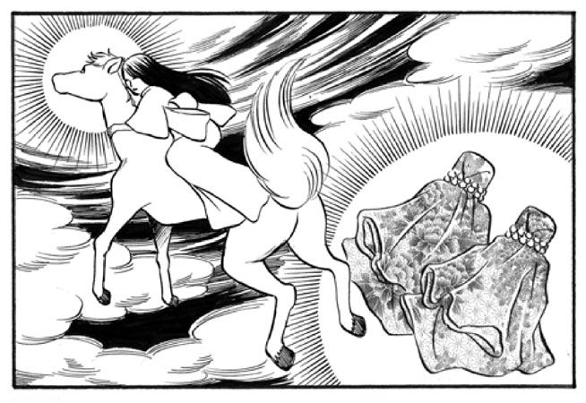
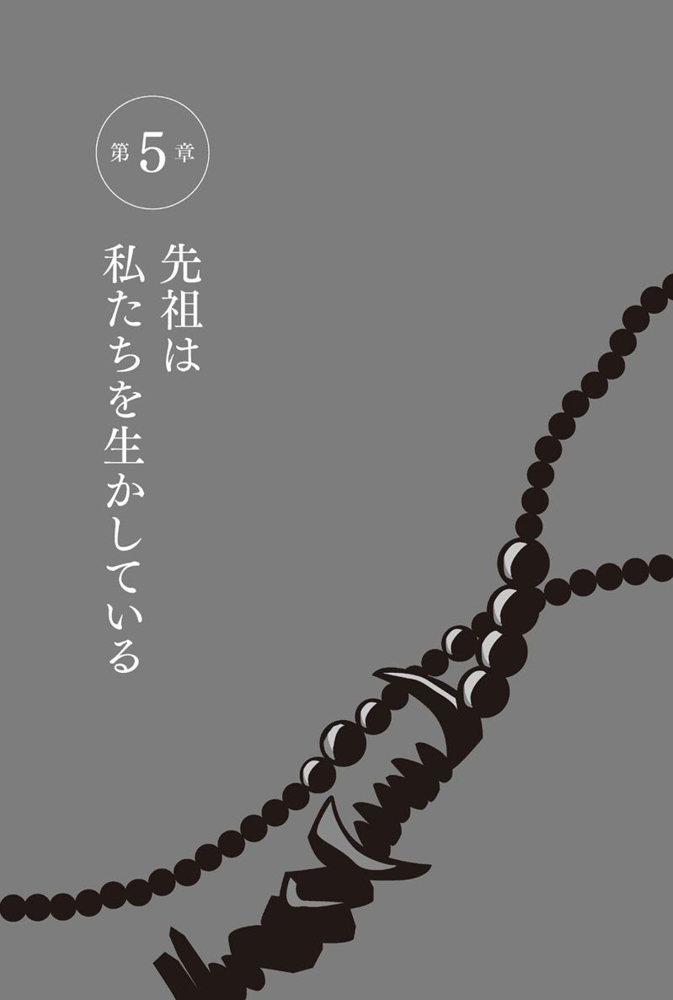

| 最後のイタコ | |
| 松田 広子 | |
| (2013) | |

最後のイタコ
まえがき
「人は死ぬと、お山さ行ぐ」
青森県の下北半島では、昔からそう信じられてきました。
そのお山が、「霊場・恐山」。
私たちイタコが死者の魂をこの世に降ろし、その言葉を伝える「口寄せ」をおこなう霊山です。
恐山に行けば、イタコに会える。多くの方は、そう思っているでしょう。
しかし、イタコは恐山に毎日いるわけではありません。
イタコは、恐山の菩提寺円通寺から許され、夏と秋のお祭り（夏の大祭、秋詣り）の期間だけ滞在し、口寄せをおこなっています。
では、イタコはどこにいるのでしょうか？
普段はほとんどのイタコが、青森県南部地方（八戸市を中心とした県東部）や津軽地方（弘前市を中心とする県西部）に暮らしながら地元で活動しています。
私も、その中の１人です。19歳の時にイタコになり、すでに20年以上が経ちました。
１９８０年代、３００人はいたと言われるイタコも、高齢化が進みました。
今、イタコは〝絶滅危惧種〟と呼ばれています。
現在活動しているイタコは、10名以下。
私を含めた40代のイタコ２人がいなくなれば、イタコという職業は消えてしまうかもしれないのです。
イタコの語源には諸説あり、はっきりとはわかっていません。神に関わる仕事をする人、神の言葉を伝える人を、古代から「ミコ」「イタコ」と呼んだと言われています。あの世の魂を自分の体に乗りうつらせ、亡き人の言葉を伝えるイタコは、科学では解明できない特殊な能力を備えた存在です。
そんなイタコという職業は、目の不自由な女性の生業として、古くから東北地方に存在してきました。厳しく長い修行に耐えられた者だけが、神仏とつながる特別な力を得てイタコとなり、神様の力をお借りして、口寄せの他に、お祓いや占い、神事などをおこなってきたのです。
人間の体は滅んでも、魂は存在し続けます。
そして、あとに残された人を思い、守り続けます。
イタコは死者や神仏の代弁者として、あの世とこの世をつなぎ、人々の心を癒し元気づける役目を果たしてきました。日々、見えない世界から伝えられるメッセージを人々に届けるこの仕事を、私は自分の天職だと受け止めています。
なぜ、目の見える私がイタコとなったのか。
イタコという仕事が、本当はどのようなものなのか。
そして、恐山という場所が、イタコが紡いできたあの世との絆が、現世の人たちにどのような力を与えているのか......。
この本では、現役のイタコとして、私の仕事や半生についてお話しながら、今思うこと、感じることをお伝えしていきたいと思います。
イタコである私の経験や思いが、どうかあなたの人生のお役に立てますように......。
そう祈りながら、筆を進めていきましょう。
松田広子
目 次
憧れの職業は「イタコ」
「なぜ、イタコになろうと思ったの？」
これまで、何回この質問を投げかけられたでしょうか。
そのたびに、はっきり理由を答えられないもどかしさを感じます。
ごく自然に、この道を選びました。
私には、そうとしか言えないのです。
イタコは、私にとって幼いころから身近な存在でした。
体が弱く医師からも見放された私が健康な大人になり、今こうやって自分で選んだ仕事ができるのは、ひとりのイタコとの出会いがあったからです。
そのイタコ、のちに私の師匠となる林ませとの家族ぐるみの交流によって、私はいつしか、イタコという職業に憧れを抱くようになりました。そして、15歳で進路を決めるときに「イタコになりたい」と宣言し、19歳で晴れてイタコとして独り立ちしたのです。
なぜ、目の見える私がイタコになりたかったのか。
なぜ、ほかの職業ではいけなかったのか。
うまく伝えられるかどうかはわかりません。でも、私がイタコになるまでの道のりをありのままにお話しすれば、もしかすると何かを感じ取っていただけるかもしれません。
物心ついてからイタコ修行を認めてもらえるまで、私が何を体験し、何を思ったのか。これからお話ししていきましょう。
「大人になったら、イタコになりたいなあ」
イタコを将来の仕事として意識し始めたのは、小学高学年のころでした。どんな子どもでも、未来への夢が少しずつ現実的なかたちになっていく時期です。
同級生たちは、保育士や学校の先生、お菓子屋さんなど、ごく一般的な職業を夢見ていました。私も、将来の夢をテーマにした作文には「花屋さんになりたい」と書きました。「イタコ」と書いてしまうと、先生や親からきっといろいろ言われるに違いない。子ども心に、そう思っていたからです。
実は、その当時、東北で暮らす人たちにとって、イタコは珍しい存在ではありませんでした。
私の住む八戸市では、昭和40年代までは、各町内にたいていひとりはイタコが暮らしていました。ほぼ全員がおばあさんで、目に障害のある人だけでなく、目の見える人もいたのです。
東北のほかの地方でも、ほぼ同じ状況だったようです。土地によってイタコの呼び名はさまざまでした。「オガミサン」（岩手県・宮城県）、「ミコ」「オナカマ」（山形県）、「イチコ」（秋田県）、「ミコサマ」（福島県）......。
まえがきにも書いたように、イタコの仕事は、死者の霊を呼び出す口寄せだけではありません。神事、占い、祈禱、人生相談など、多岐にわたっていました。どの家も家族にトラブルが起きたら、近所のイタコに相談したものです。
東北では、イタコは生活に密着した「カウンセラー」のようなものであり、家庭内の神事を司る「祭祀者」でした。そして、「お医者さん」でもありました。
そのころの八戸にはまだ病院が少なく、風邪やちょっとした体調不良であれば、神社やお寺、そしてイタコのところへ行くこともありました。特に、町内にいるイタコは、健康について気軽に相談できる存在だったのです。
だから、何かあるとすぐに高熱を出して寝込んでいた幼い私が、イタコのお世話になったのも、決して特別なことではなかったのです。
保育園を〝中退〟した子ども
赤ちゃんのころから病弱だった私は、保育園も休みがちでした。
当時通っていた保育園の行事で、七五三のお祝いに神社へお参りしたときのことです。その夜から高熱が出て、何日も下がりませんでした。
病院へも行きましたが、いっこうによくなりません。心配する母に、仕事仲間が紹介してくれたイタコが、のちに師匠となる、林ませでした。
私を連れていった母親に、師匠はすぐにこう言ったそうです。
「この子の病気は、先祖の霊が原因だよ」と。
その場でお祓いをしてもらい家に帰ると、私の熱は嘘のように下がっていたといいます。
今思えば、そのときの熱はただの知恵熱で、たまたま同じタイミングで下がっただけかもしれません。しかしこのことがあって、母は私が体調を崩すと師匠の元を訪れるようになりました。
何しろ、私は月に何度も熱を出していましたから、土日といえばイタコ通いの日々が続きました。
それから１年ほどして、私は髄膜炎という大きな病気にかかります。
髄膜炎は、脳や脊髄を覆っている髄膜がウイルスなどに感染して炎症を起こす病気で、小さい子どもに多く発症します。高熱や頭痛があり、時には重症化して後遺症が出ることもある怖い病気です。
この病気にかかると、何回も髄液を取って検査しなければなりません。そのために、どんな小さな子どもでも背中に注射針を刺す必要があります。その注射針は特別に長く、骨髄採取はかなり痛いのです。
しかし、嫌だと泣いても逃れられるものではありません。痛みを必死で我慢しながら、背中に注射針を刺されていたことを今でも覚えています。
一度は退院したものの、病状は一進一退。入退院を繰り返す日々が続きました。
そんななか、イタコ通いも続けました。
お祓いをしてもらったときだけは、いつもはだるい体がスッと軽くなるので、師匠のところに通う日を楽しみに待ったものです。
ところが、その後しばらくは体調がいいのですが、何日かたつと、また熱が出てしまいます。
そのうち、とうとう保育園に通えなくなり、私は保育園を〝中退〟の身となりました。
そして病院にも、これ以上は手の施しようがないと言われ、サジを投げられてしまいました。
両親は、私が生後10カ月のころに離婚し、私は当時、母の実家で母と祖父母と暮らしていました。孫の病気がいっこうに治らず、祖父母も随分心配したといいます。病院に見放され途方に暮れる私たち一家にとって、師匠の存在だけが、ひと筋の光明でした。
夜に熱が出れば、タクシーを40分も飛ばして師匠のところに駆け込みます。多いときは、週に２回は通っていた時期もあります。
家にも何度かお祓いに来てもらい、家具や掛け軸の配置などをアドバイスしてもらいました。
しかし、師匠のお祓いやアドバイスで少しずつ体調はよくなっていくものの、なかなか完全には治りません。
保育園の友だちのように、元気に外で遊べるようになるのだろうか......。
時折、そんな疑問が小さな胸に浮かぶことがありました。
不思議と「ほかの子がうらやましい」とか、「なぜ自分だけが病気になるのだろうか」といった、人をうらやんだりねたんだりする気持ちは少しも湧いてきませんでした。
これはほかの誰でもない、自分の身に起きたことだから仕方のないことだ。
幼いながら、そう思っていたのかもしれません。
八戸では、親しみを込めてイタコのことを「かか様」と言います。
イタコが、グチや悩みごとを何でも聞いてくれる母親のような存在だからでしょう。時には「お祓いで本当に病気が治るのだろうか」と不安を感じながらも、「かか様」のところへ行くのが嫌だと思ったことは一度もありません。
寝たり起きたりの苦しい毎日の中で、師匠のところに行くときだけは、体のモヤモヤが取れて楽になったような気がするのでした。
お祓いに行くと、師匠は、イタコだけが持つ特別な数珠をじゃらじゃらと手でこすり合わせ、経文を唱えながら私の体に数珠で触れていきます。その口から出てくる不思議な経文やまじないは、まるで子守歌のようで、心地いいものでした。
真剣な表情で目をしっかりと閉じ、低い声をふり絞るようにして独特の節回しで経文を唱える師匠。
師匠の経文が始まると、部屋の雰囲気が凛として澄んだような感じになります。
その姿は、まるで魔法を使う特別な存在のように見えました。
私は師匠の姿をじっと見つめながら、いつもその声にうっとりと聞き入っていました。
「薄紙を一枚ずつはがすように」という言葉があります。
今日よりも明日、明日よりも明後日。
時がたつにつれて、本当に少しずつですが、私の体は快方へと向かっていきました。
そして、小学校へ上がるころには、何とか毎日学校へ通えるくらいの元気を取り戻していたのです。
病院も見放した私の体は、「かか様」のおかげで健康へと導かれたのです。
「奇跡の子」と呼ばれて
苦しかった当時を思うと、健康でいられる今が信じられないような気持ちになります。師匠に出会えたことも含めて、こうしていられるのも何かに守られてきたからかもしれません。子どものころのある出来事もあって、私はそう思うようになりました。
それは、２歳か３歳のころのことです。
珍しく近所の田んぼで友だちと遊んでいた私は、足を滑らせて、あぜ道の横にあった小さな沼に落ちてしまいました。当時の記憶はまったくありませんが、真っ逆さまにドボンと落ちたようです。
まだ小さな子どもですから、大人のように自力で顔を上げることなどできません。
幸いしばらくして近くの大人が気づき、引き上げてくれたのですが、発見されたときは、足だけが上に出て上半身は沼の中だったそうです。
普通ならとっくに窒息死している状況でした。
この出来事は近所でも噂になり、しばらく私は「奇跡の子だ」と言われたそうです。
不慮の事故で命を落とす子どもがいれば、大きな病気にかかって大人になる前にこの世を去る子どももいます。
私もどこかで一歩間違えば、今ここにいなかったかもしれません。
だとしたら、生かされているということを無駄にしてはいけない。
「奇跡」を無駄にしてはいけない。そう思います。
子どものころの私は、体が弱かったことを除けば、ごく普通の子どもでした。体が弱く友だちとあまり遊べなかったせいか、人と交わるのが苦手で、どちらかというと神経質なタイプでしたが、それ以外に特に変わったところはありませんでした。
もし少し変わっていたところがあったとすれば、不思議な夢や怖い夢を頻繁に見ていたことでしょうか。
たとえば、美しい蓮の花が咲き誇っている池やお堀をさまよっている夢。
白い着物を着て、らせん階段を登っていく途中で、知らない人の声に呼び戻されて目が覚める夢。
あの世を思わせる荒涼とした場所で、仏様のような人がジッと私を見ている夢......。
もともと癇の強い子でしたが、夢見の悪さはいつも私を悩ませたものです。夜中にうなされて起きることも、しょっちゅうでした。
子どもですから、恐い夢を見ると起きていても不安を引きずります。
心配した母は師匠に相談して、悪夢を封じるおまじないをしてもらいました。また、夢の内容を占う夢占いをしてもらったこともありました。
占いの内容は忘れましたが、当時見ていた怖い夢は今でもはっきりと思い出します。
自分が異界に迷い込んでしまったかのようなリアルな夢......。
私の知らない世界が確かにある。
夢は、いつしか私にそんな思いを抱かせるようになりました。
家族旅行は神社仏閣へ
ほかの子どもとは違っていただろうと思うことが、もうひとつあります。
それは、家族旅行の行き先です。家族旅行といえば、観光地やテーマパーク、海水浴やキャンプなどに出かけるのが普通でしょう。
しかし、我が家の家族旅行は、決まって神社仏閣巡りでした。そこで、私の体がよくなるようにご祈禱をしてもらうためです。
今でこそ、パワースポットという言葉が流行し、神社仏閣が脚光を浴びています。若い女性たちで賑わう神社やお寺も少なくありません。けれども、当時は高齢者ばかり。それでも私にとって、家族と一緒に神社やお寺に参拝することは、とてもワクワクする大イベントでした。
神社の鳥居をくぐるときに感じる清々しさ。
そして、お寺の本堂の荘厳な空気。
どれも私をホッとさせ、安心させてくれました。そして、そんな聖域にいると、心がのびのびするのを感じるのでした。
また、参道に連なっているおみやげ屋さんには、子ども心をくすぐるおもちゃなどもあり、いつもウキウキした気分にしてくれました。
私たち一家は、近くの寺社はもちろん日本各地を訪れました。
遠くは、三重の伊勢神宮、九州の太宰府天満宮や四国の金比羅宮......。高野山や飛彈高山まで足を伸ばしたこともあります。
家族旅行は、私が20歳になるころまで続きました。
お寺や神社に旅行したのは、祖父母が信仰心の篤い人だったという理由もあります。
実は、松田家はもともと古くから続く神社ゆかりの神職の家系です。
八戸には、櫛引八幡宮という鎌倉時代から続く神社があります。南部藩（岩手県花巻市、遠野市、青森県下北半島、秋田県鹿角市）の総鎮守であり、南部一之宮として、多くの人の信仰を集めるお社です。
この櫛引八幡宮には、江戸時代に５つの坊（お堂）がありました。
その中のひとつ「坂本坊」と呼ばれた坊を守った一族が、松田家の祖先です。山伏修行を行いながら、神職のような役割を果たしていたと言います。
その血を受け継いだ私の祖父も、そして嫁いできた祖母も、神仏をとても大切にする人でした。
家にはさまざまな神様が祀られ、何本もの掛け軸が飾られていました。それらの多くは代々受け継がれてきたものです。
古い掛け軸はだいぶ減らしましたが、今覚えているだけでも10幅以上は飾ってあったでしょうか。春日大社、古峯神社、太宰府天満宮、熊野大社、金比羅宮、大国主命、恵比寿大黒天......。
複数の神仏を信仰するのはよくないと言います。しかし、日本には古くから神様も仏様も同じように敬う神仏習合の習慣が根付いていました。
病弱な孫が健康になりますようにと、祖父母はいつも熱心に神棚や仏壇を拝んでいました。祖父母のおかげで、私は神仏の存在を幼いころから身近に感じていました。
私がこの道を選んだのは、そんな家庭環境が大きく影響していたと思うのです。
クレジットカードを作れない仕事
小学校時代は、友だちと一緒に元気に通学できる日が続きました。そんな当たり前のことが、どれだけ嬉しかったことか......。
それでも、時には風邪をひいたり、疲れが原因で熱を出したりします。そんなときは、すぐ師匠の家へ行きました。
イタコは、お祓いや口寄せだけでなく、家の中全般の相談事に対応します。
神棚や仏壇の祭り方、家具の配置、家族の健康相談や行事の日取りなど、師匠が家にやってきて、さまざまなことについてアドバイスしてくれることもありました。そのアドバイスはいつも的確で、我が家の大切な指針となっていました。
小学生になった私の目に、師匠の姿はとても新鮮に映りました。
「こんなにも人に頼られ、役に立てる仕事があるんだ。しかも、女の人がひとりでやれる......」
そんな思いは憧れに変わり、少しずつ私の中で大きくなっていったのです。
しかし、先ほど書いたように、私が「将来の夢は、イタコです」と作文に書くことはありませんでした。
誰もが知っているとおり、イタコは、世間一般の仕事とは違う特殊な職業です。
お役所的な言い方をすればイタコは自営業で、手続きをすれば、宗教法人として登録することもできます。でも、実際に宗教法人として登録しているイタコはひとりもいません。
もともとイタコという職業は、目に障害のある女性が厳しい世の中を自活して生き抜くための生業として始まりました。たまたま、師匠は私と同じように目が見えましたが、多くのイタコは何らかの障害が目にあります。自分から志願して弟子入りする人は少なく、ほとんどは、やむにやまれずこの道を選んだ女性たちです。
昔は収入も安定せず、地域では頼られる存在でありながらも、その社会的地位は決して高いものではありませんでした。
今も、イタコをやっている限り、クレジットカードを作ることはできません。
毎月決まった収入のないことが理由だと思います。
あえて言うなら、人のために身を削って尽くす仕事でありながら、世間からは認められない「根無し草」とも言える存在。それが、イタコです。
イタコになるということは、そんな世界に飛び込むということです。
決して、生半可な気持ちで選べる職業ではありません。
友だちがなりたいと言っているような仕事とイタコが、まったく違う職種であることは、小学生でもわかることでした。
けれども、私の中でぼんやりと生じたイタコへの憧れは消えることがなかったのです。
それでも、イタコになりたい！
「将来は、イタコになりたい」という思いは、学年が上がるにつれて、ますます強くなっていきました。
いつかは、この気持ちを親に言わなければいけない。
そう思いつつ、私は中学３年生になりました。
部活は、合唱部。クラスでは、友だちともそれなりに楽しくつき合う毎日。
しかし、イタコになりたいという気持ちを打ち明けようと思う友だちはいませんでした。表面上の友だちづきあいはするものの、そのころの私は、どちらかというと一匹狼のようにひとりで行動するのが好きだったのです。
本当の自分を出してしまうと笑われるのではないか。自分が傷ついてしまうのではないか。私の中には、常にそんな思いがありました。
夏が訪れると、同級生たちと「進路はどうするの？」という話になります。
そんなときは「高校には行かず、就職する」と答えました。
進路指導の先生にも、就職希望と伝えていました。
友だちの多くは、進学希望です。けれど、私は高校に行くことにまったく魅力を感じなかったのです。
早く自立して働きたい。
早く大人として一人前になりたい。
それが、私の希望でした。そして、当時すでに「大人になって自活する＝イタコになること」という図式が、私の中にはっきりと出来上がっていたのです。
ほかにもたくさんの職業があるにもかかわらず、なぜ、よりによってイタコだったのか？
それは、人の役に立ち、自立していた一番身近な女性がイタコだったからかもしれません。
地元で有名な人気イタコだった師匠のもとには、毎日20〜30人もの人が相談に訪れていました。なかには、家族にも言えない悩みや問題を抱えて、助けを求めにきた人もいます。どんなに混んでいても、師匠はそんな相談者の話を丁寧に聞いていくのです。
そして、訪れた相談者は、時には涙を流し、時には何度も頭を下げてお礼を言いながら、皆スッキリとした表情で帰っていくのです。
客のひとりとして師匠を訪れて、そんな様子を長年見続けていて、私は思いました。
「自分の力で人を助けられる、こんなにいい仕事はない。この仕事は自分に合っている」と。
幼いころから、師匠のところに通った日々。自分の体が思うようにならないもどかしさも、イタコという存在のありがたさも、子どもなりに身にしみて味わいました。
そんな経験も、イタコになれば、もしかすると役に立つかもしれない......。
私の中に、ごく自然に生まれた大切な思い。
そして、ずっと胸に秘めてきた思い。
「こうなりたい、こうありたい」と決めること、また、誓願を立てて巡礼の旅に出たり、特別な修行を始めることを、仏教では「発心」と言います。
秋になり、いよいよ進路を決めなければならないという時期。
イタコになりたいという自分の「発心」を、私はとうとう家族に告げたのでした。
家族が諸手を挙げて賛成するはずはないと、もちろん思っていました。
私は目に障害があるわけではありません。ましてや一人娘です。母親も祖父母も、病気がちの私を、この上ないほど大切に育ててくれました。その娘がイタコになりたいと言いだしたとき、賛成するはずはないでしょう。
当然、家族は驚きました。あわてふためいて、口々にこう言いました。
「なんでイタコなんだ！ 何も、自分から特殊な世界に飛び込んでいかなくてもいいじゃないか！」
「高校には行かなくてもいいから、せめて普通の仕事をしなさい！」
もちろん、家族に反対されたからといって、私の気持ちが変わることはありません。
「いやだ！ イタコになりたい！ 私の体を治してくれた恩人は、かか様でしょ！」
私は、一度決めたら滅多なことでは考えを変えない頑固な性格です。
話し合いの日々は続きました。
しかし、いつまでたっても平行線でした。
気がつくと、進学を希望する子は受験シーズンを迎え、就職希望の子は、ほとんど就職先が決まっていました。私だけ宙ぶらりんの状態です。
どうしても、私はイタコになりたい！
思いは、ますます強くなるばかりでした。
家族にいくら反対されても、これだけは譲るわけにはいかない。そう固く決めていました。
「それなら、師匠に相談しにいこう」
ある日、誰からともなくそう言いだし、私たち一家は師匠のところへと向かいました。師匠の家を訪ねる日、内心、私はドキドキしていました。
「もし断られたら、どうしよう......。イタコになれなかったら、どうすればいいんだろう」
私の希望を聞いて、師匠は一瞬意表を突かれたような顔になりました。
そして、「まさか、お前がイタコになりたいと思うとは考えもしなかった」と言いました。
今思えば、師匠はたぶん「これは、一時の気の迷いだ」とでも思ったのでしょう。しばらく黙って考えたあとに、師匠はこう言ったのです。
「わかった。でも、これからのイタコは学問も必要だ。まず高校へ行きなさい。そして、卒業してもイタコになりたいのだったら、そのときは弟子として迎えましょう」
「やった〜!!」
私は、叫びたい気持ちでした。
イタコになれることがわかれば、高校に行くことなど何の苦にもなりません。
家族も、とりあえず高校に入れば、そのうち考えが変わるだろうと思ったようです。 私は、急きょ進学することに決めました。
とても不謹慎なことですが、高校を選ぶときの基準は「すぐにやめられそうな学校」でした。いつでもイタコになれるようにしておきたいと思ったからです。
結局、願書を提出したのは、提出期限の直前でした。
私は、人前でしゃべることがずっと苦手でした。
それなのに、自分でも驚くほど真剣にイタコになることを望みました。
それは、今でも不思議でなりません。
イタコへの憧れは、ある日、自分の中からフッと湧いて出たのです。
「神様が降りてきたに違いない」と言う人もいます。
「イタコになるように、天から選ばれたのだ」と言う人もいます。
もしかすると、何者かから無意識のうちに「選ばされた」のかもしれません。
何が正しいかは、私にはわかりません。
また、あえて追求する必要もないでしょう。
特別な理由も、不思議な因縁話も要りません。イタコという職業が、幼いころから身近に存在して、イタコによって健康な体を取り戻した。そして、友だちが保育士やパン屋さんに憧れるように、ごく自然にイタコに憧れるようになり、ごく自然に将来の仕事として選んだ。
私にとっては、ただそれだけのことなのです。
コラム
霊場恐山とイタコの関係について
文／江刺家均（郷土史家）
僧侶や山伏修験者の
霊験修行の場
恐山が霊場として開かれイタコ（巫女）が口寄せをするようになったのは、いつのころからかはっきりしていません。昭和30年代以降に学術的調査が何度か行われた結果では、明治時代後半だろうといわれています。
恐山が霊場として信仰されるのは、東北北部に仏教がもたらされた平安時代の末期ごろ、僧侶・山伏修験の山岳修行の場として開かれたことからと考えられています。
霊場恐山の栞には「恐山は、今からおよそ１２００年の昔、慈覚大師円仁様によって開かれた霊場です。中国でご修行中の若き日に見た夢のお告げに導かれ、円仁さまは、諸国に教えを説かれてのたびの果てに、この下北の地にたどり着かれました。そのとき、眼前に広がるまさに霊場と呼ぶべき風光に感じ入られ、地蔵菩薩一体を彫刻し、本尊となさったのです......」と記されています。
霊場「恐山菩提寺」の本坊である「曹洞宗円通寺」に伝えられる伝承をもとにしていますが、はじめは慈覚大師円仁和尚の天台宗の霊場として開かれました。慈覚大師が関わって開かれたり、中興として興された東北の寺院には、瀬戸内寂聴師で知られる岩手県二戸市の「天台寺」や、松尾芭蕉の『奥の細道』に描写される山形市山寺の「立石寺」、秋田県にかほ市の「蚶満寺」など、有名無名の数多くの寺院があります。
室町時代の後期には下北半島で大乱があり、その結果、八戸南部氏（根城南部氏）の領有するところとなりました。断片的な歴史資料からうかがわれるのは、八戸南部氏の篤い信仰と庇護のもと霊場修験の場として整備されたものと考えられています。「オシラ様」と呼ばれる家々の神様が篤く信仰され祀られていくのも、八戸南部氏時代のことでした。僧侶や山伏修験者が〝特別の力を得るため〟の修行の場として、霊場恐山に「お山参り」したことが霊場中興の整備であったと考えられます。このとき、わずかですがイタコも師匠上がりの修行として「お山参り」をしたことが、霊場恐山とイタコの関わりの始まりだったようです。
八戸南部氏は江戸時代の寛永４年（１６２７）に岩手県遠野市に移封となり、遠野南部氏となりました。このとき移動した家臣団家族が持参した「オシラ様」が、遠野地方で最も古い「オシラ様」で、包頭型（オセンダクと呼ばれる衣装を頭から被った型、南部型）の「オシラ様」です。霊場恐山の中興整備と「お山参り」、「オシラ様」の祭祀、「イタコ（巫女）」の誕生と八戸南部地方から遠野南部地方にかけての「オシラ様」信仰など、八戸南部氏の家臣団とのかかわりが、東北北部沿岸部に特有の信仰の謎を解くカギのような気がします。
縄文時代から続く
死者に寄せる思い
現在のように「恐山菩提寺」の門塀の周辺にイタコが並んで「口寄せ」をするようになった時期もはっきりしませんが、学術的調査の結果、明治時代の後期ごろではないかとされています。
明治後期に入ると日本は、「日清戦争」（１８８４～１８９５）と「日露戦争」（１８０４～１９０５）の２つの大きな戦争によって、数多くの戦死者を出しました。国家の発展のためとはいえ身近な肉親を失った家族や縁者の悲しみは、割り切れるものではなかったことでしょう。そうした悲しみは全国に溢れ、亡き死者に会うために各地の霊場に「お山参り」や、観音霊場の巡礼、四国八十八カ所などの霊場巡拝が行われていきます。
こうした時代状況を背景にして、亡き死者の霊が集まっていると信じられている「霊場恐山」に人々が押し寄せ、亡き人の声を聴くために「イタコ」による「口寄せ」が行われたことが霊場恐山と「イタコの口寄せ」の始まりで、平成の現在まで受け継がれています。
時代時代に様相を変えてイタコによる口寄せが行われてきましたが、平成の現在でも霊場恐山に参詣者が絶えないのは、戦争による死傷者に匹敵するほどの現代的な要因（病死・事故死・交通事故死・自殺・老衰自死など）が、その背景にあるからなのでしょう。死者の魂を呼ぶ（口寄せる）行為は、恐らく縄文時代からあったと考えられます。我が国で文字が使用され記録が始まった『古事記』『日本書紀』『万葉集』の時代から、霊寄せ・魂鎮め神事として「イタコの口寄せ」と同様の行為が、数多く記録をとどめています。
『万葉集』を読むと「相聞挽歌」として、死者を偲ぶ和歌が数多く見られます。思いを断ち切ろうとする歌、悲しみにくれ涙する歌、思い断ちがたく涙、涙の歌とさまざまですが、現代の「死者に寄せる思い」と変わらないものです。
死者の霊や魂を
呼び寄せ声を伝える
人が生まれ死んで、また生まれ死に続ける限り、死者の魂・霊を呼んで声を聴きたいという、残された人々の渇望は消えることはないでしょう。地球や人類が消滅しない限り、渇望は湧き続けることになります。こうした「常に動き続け、停止することのない状態」のことを「無常」といいます。
日本に多くある霊場のなかで、死者の霊・魂を呼び寄せ声を伝えるという「神降ろし、仏降ろし、口寄せ」が行われるのは、霊場恐山と周縁の地域であることは全国の多くの人びとの知るところです。これからも将来的に人の営みが続く限り、人々は霊場恐山に参詣し、亡き人に出会い声を聴くことを渇望し続けることでしょう。
私たちはできる限り、南部地方に伝統的に受け継がれてきた「イタコの伝承・巫史」を絶えることのないように、これからも何世代にもわたって伝えていかなければならないと考えています。
平日ヤンキー、週末イタコ
私が入学した高校は、いわゆる「ヤンキー（不良）」の多い学校でした。
入学式では普通だった同級生の眉が日増しに細くなり、髪型や髪の色もどんどん変わっていきました。
実際に話してみると、外見は少し怖くても皆、優しい子たちです。でも、グループでつるんで繁華街をうろついたり、夜遊びしてケンカ騒動を起こしたり......。遊びに誘われたこともありましたが、とうていついていく気分にはなれませんでした。
部活も特に魅力的なものはありません。私が思うのは、やはり「修行がしたい」ということでした。
師匠には「卒業してから来るように」と言われています。
でも３年も待つなんて、とてもできません。
そこで、高１の夏休みに入ってすぐ、私は決心しました。
「押しかけ修行」に行くことにしたのです。
ある朝、家族に黙って家を出ると、私はひとりでバスに乗りました。行き先は、師匠の家。それは、幼いころから数え切れないほど通った道のりでした。
突然やってきた私を、師匠は黙認というかたちで認めてくれました。
私はその日から、師匠の仕事ぶりを見て学ぶことを許されたのです。ちょっと大人になったような、夢に少し近づけたような、興奮と嬉しさで私の胸はいっぱいでした。
それから、私は時間が許す限り師匠の家を訪れました。
師匠の家には、入れ替わり立ち替わり相談者がやってきます。
「押しかけ弟子」として間近でイタコという仕事を見て、私は「イタコって、とても難しい仕事なんだ」と感じました。
イタコの言葉は、神様や仏様の言葉です。その一言一言に、相談者の一生を左右するかもしれない大きな責任があります。お告げを間違って伝えたり、微妙なニュアンスをきちんと言い表せなかったりしたら、その人の人生を狂わせることにもなりかねません。間違いは、絶対に許されない仕事なのです。
それでも、私の決心が揺らぐことはありませんでした。
イタコに弟子入りすると、師匠の家の掃除や洗濯、炊事など家事全般を手伝いながら、衣食住を共にして修行します。私も師匠の家に行った日は、慣れない家事を自分なりに一生懸命手伝いました。
８月に入ったある日のことです。いつものように師匠の家に行くと、師匠が言いました。
「もう、こうやってうちに通っているんだもの。親御さんにちゃんと認めてもらわないとね。正式に弟子入りできるよう、私から頼んであげるから」
私は喜んで、師匠にお礼を言いました。
師匠は、我が家の相談役として、家族が頼りにしてきた人です。その師匠が修行に入ることを許せば、家族もたぶん許してくれるに違いありません。
師匠から連絡が行くと、初めは「まだ高校生だから」と母親も祖父母も渋っていました。しかし、最後はとうとう母親が弟子入りを認め、祖父母に取りなしてくれました。
「実際にもうお世話になっているんだから、今さら止めても、この子は勝手にかか様のところに行ってしまうだろう......」
許してくれたというより、あきらめてくれたと言ったほうが正しかったのかもしれません。
とにかく、ようやく晴れて入門が許されたのです。
８月の中旬、私たち一家は、「七草」（ナスや大根などの山の幸と、昆布や小魚などの海の幸）と呼ばれる供物と日本酒を手に、親子揃って正式に弟子入りのお願いに行ったのでした。
「これでやっと、誰に遠慮することなく修行ができる！」
そう思うと、嬉しくて嬉しくて......。
もちろん、自分にイタコができるのだろうかという不安もありました。
でも、不安と喜びを比べてみると、喜びのほうが何倍も大きかったのです。自分の道を確実に一歩踏み出せたようで、私の胸は躍りました。
夏休みが終わると、週末は一泊でイタコ修行、平日は普通の高校生という二重生活が始まりました。
私を導いた師匠・林ませのこと
私の師匠・林ませは、南部イタコの五世代目。南部イタコは、その系譜が江戸時代まですべてさかのぼれることから、近年、正式には「南部伝承イタコ」と呼ばれています。
ほかの地域のイタコと違うのは、すべてのイタコの師匠を代々たどっていけるということです。南部地方で活動するイタコの師匠をさかのぼっていくと、最終的には「高舘イタコ」というひとりのイタコに行き着きます。
高舘イタコは、２５０年ほどの伝統を持つ「南部巫史」の技を、目の不自由な女性の生業として、南部地方でイタコという職種を確立しました。
その後、イタコの伝統は、代々師匠から弟子へと受け継がれてきました。
林ませは、近年の南部イタコの中で多くの弟子を取り、熱心に後継者を育てたことで知られています。
といっても、望めば誰でもイタコになれたわけではありません。その子がイタコとしてやっていけるかどうか、適性ももちろん考慮されました。しかし、希望者全員を弟子にしてしまうと、その数だけ自分の商売敵をつくることになります。そのせいか、弟子を取らないイタコもたくさんいるのです。
しかし、師匠は長年にわたって弟子の育成に力を注ぎ、私もきょうだい弟子と一緒に修行時代を過ごしました。現在、活動している南部イタコのほとんどが、林ませに教えを受けたといわれています。
イタコの修行は、すべて一対一の口伝です。時間もかかりますが、それ以上に、相当な体力と集中力が必要です。
師匠は、日中は人気イタコとして仕事をしながら、夜の８時、９時ごろから弟子たちに稽古をつけてくれました。気の張り詰める仕事を終えて稽古をつけるのは、どれだけの気力や体力が必要だったでしょうか。今あらためて振り返ると、師匠のすごさを感じます。
しかし当時の私は、まだまだ子どもで、そんなことには考えが及びませんでした。
師匠の家では家事を手伝い、残りの時間は仕事の様子を見たり経文を覚えたりして、自分なりにがんばっていたとは思います。けれども、弟子とはいえ、幼いころからお世話になってきた「かか様」の家です。修行を始めたころは、師匠の家の子どもになったような感覚でした。
たとえば、相談者の取り次ぎひとつとっても、来客があれば「お客さんが来たよ〜」と師匠に知らせ、予約の電話を受けたら「かか様、○時に予約入れるからね」と報告する......。高校生だから当然といえば当然かもしれませんが、修行というよりも、自分の家の手伝いをしているような感覚です。
そんな私に師匠はあくまでも優しく接してくれました。師匠から叱られたことは、一度もありません。
もうひとり、娘ができた。
師匠もそんな気持ちだったのでしょう。
時には、師匠の付き添いとして、相談者の家に同行することもありました。
付き添いとはいえ、人見知りの私が知らない人の家に行くのは、正直おっくうだったものです。でも行ってみると、さまざまな家庭があることがわかり、いい社会勉強になりました。
修行時代、私は師匠の仕事を通して、イタコの役割を改めて知りました。
相談者は皆、何らかの悩みや問題を抱えた人たちです。その人たちは、家族や親しい友人にも打ち明けられない話を、師匠の前で赤裸々に語ります。
たとえ深刻な悩みごとでも、イタコには正直に言えるのです。
相談者は、イタコに話しているのではありません。イタコは、神様や仏様の代理人。亡くなった親族や神様に向かって、人には言えない自分の思いを語っているのでした。
時には涙ながらに悩みを打ち明ける人たちの姿が、今でも印象深く心に残っています。
師匠は、どちらかと言うとサバサバした性格で、はっきりとものを言うタイプの人でした。ただ、どんなときも決めつけることはしません。あくまでも相談者が自分で結論を選べるように、「○○したほうがいいんじゃないか」「○○はやめたほうがいいかもしれない」と、丁寧に導いていくのでした。
そして、どんな人の話も、否定したり笑ったりせず、真剣に受け止めるのでした。
イタコに悩みごとを相談したり、お祓いをしてもらったりすることで、相談者は安心し、元気になって、日々の生活へと戻れるのです。
時々、夜の９時、10時に「子どもが熱を出した」「おなかが痛くなった」と電話が入ることもありました．そんなときは、どんなに遅くても師匠は出かけていきました。その様子を見ていると、イタコである師匠は、地元の人にとってなくてはならない存在だということがわかるのでした。
――師匠のようなイタコになりたい。
師匠のそばで修行を始めてから、いっそうイタコへの思いが強くなっていきました。
イタコ見習いの女子高生
平日は、高校生。土日には、師匠の家でイタコ修行。
そんな日々にも慣れ、同時に、入学当初は戸惑いの多かった高校も、次第に居心地のいい場所になっていきました。
二足のわらじを履くことで、生活にメリハリがついたのかもしれません。クラスメイトとのたわいないおしゃべりも、楽しい気分転換になりました。
八戸という土地柄、私がイタコの修行をしているといっても、驚く友だちはほとんどいません。
「へえ〜、俺のばあちゃんもよくイタコさんに拝んでもらってるよ」
「そうなんだ。何を拝んでもらってるの？」
「俺の夜遊びが、早く治まりますようにだってさ。お前もがんばって修行しろよ！」
そんな会話をするたびに、イタコという職業が特別視されることなく、地元に根付いているのだと改めて思いました。
でも時には、修行を逃げ道に使ったこともあります。
それは、「おつき合いするのは、ちょっと避けたいなあ」という不良グループから誘いがあったときです。「今、私はイタコの修行で忙しいから」と断ると、それ以降は同じグループからの誘いがピタッとなくなるのでした。
高校生活の一番の思い出は、３年生の学園祭です。
先生を含めた７人でバンドを結成し、ボーカルとしてステージに立ったのです。
目立つのがいやでカラオケも大嫌いだった私が、人前で歌うことになるなど夢にも思っていませんでした。
出演を決めたのは、ほんの偶然からです。
もともとボーカルとして出演する予定だった生徒が、急に都合で出られなくなり、その代役として私に白羽の矢が立ったのです。
もちろん、はじめは断りました。でも、目の前では同級生たちが困っています。その姿を見ていると、何か役に立てればという気持ちになり、つい「いいよ」と言ってしまったのでした。
人助けのつもりで引き受けたのはいいけれど、大勢の人の前で歌うなんて自分にできるだろうか......。
出演前までは、不安でいっぱいでした。
ところが、いざステージに上がり体育館に集まった観客を前にすると、スッと心が落ち着いたのです。
きっと、開き直ったのでしょう。多少緊張はしたものの、意外に落ち着いて歌うことができました。緊張感も楽しみながら歌っているような、不思議な感覚でした。
歌ったのは、当時はやっていたグループのコピー曲です。
あっという間に、５曲を歌い終えると、体育館に盛大な拍手が沸き起こりました。
その日以降しばらく、私は、「学園のスター」です。
「ステージ、かっこよかったね」「歌、上手だったよ！」と、話したことのない生徒からも声をかけられ、照れくさかったのを覚えています。
それまでの私は、ひとりであれこれ考えてしまい緊張してしまうので、自分から人前に出るタイプではありませんでした。でも今は、人前で話すことがさほど苦にはなりませんし、大きな舞台で緊張することもありません。
それは、このときの経験があるからだと思います。
学園祭以後、私は同級生の前で積極的に自分を出せるようになり、また、それまでは嫌いだったカラオケで歌を楽しむようにもなりました。このときの仲間は、高校卒業後にバンドを再結成したりして、ずっといいつき合いを続けています。
振り返ってみると、最初はいつやめてもいいと思った高校生活は、さまざまな経験をさせてくれました。
もし、中学を卒業してすぐに修行に入っていたら、自分の世界は、今よりもずっと狭かったと思います。相談者への対応も、まったく変わっていたでしょう。
もしかすると、師匠は私の性格を子どものころから見ていて、高校への進学を勧めてくれたのかもしれません。「これからのイタコは、高校くらい出ていなきゃ」と言ってもらったことに、今はとても感謝しています。
念願だった修行の日々
高校を卒業すると希望どおり、私は本格的なイタコ修行に入りました。
いよいよ、修行に専念できる！
また一歩、イタコに近づけたという嬉しさを私はかみしめました。
学校生活はそれなりに楽しいものでしたが、実は、週末に修行しているときのほうが、学校にいるときよりもホッとできたのも事実です。
当時は思春期ですから、人間関係などでいろいろ思い悩むこともあります。基本的にひとりが好きな私は、友人たちからの誘いも、時にはわずらわしく思ったこともありました。
そんなとき、師匠の家で手伝いをしたり経文を勉強したりしていると、心のザワザワが静まり、落ち着いてくるのです。そして、「私の進む道はこれしかない」と、改めて思えてくるのでした。
家族は、私が高校を卒業するころには、「やっぱり、イタコになるのはやめた！」と言い出すに違いないと思っていたそうです。
「高校へ行って新しい世界を知れば、考えが変わるだろうと思っていたのに......」
母親はあきれたように言いました。
でも、私は早く修行を始めたくて、うずうずしていたのです。
師匠も、もしかすると私の考えが変わるかもしれないと思っていたようです。
「高校を卒業してから、本格的に通いたい」と告げると、「......やっぱり、本気だったのか」とでも言いたげな表情を浮かべて、笑ってうなずいていました。
今考えると、師匠は、高校に行っている間に「イタコになる」ということを真剣に考えさせたかったのだと思います。
中学３年生と高校３年生では、知識も判断力もまったく違います。３年間、いろんな経験を積んで、それでもイタコになりたいというのなら、それは本物だろうと判断したのかもしれません。
正直に言えば、高校時代には「自分は本当にイタコとしてやっていけるのだろうか」と迷ったこともあります。師匠の仕事ぶりに圧倒され、自信をなくしていたのです。
しかし、やはりほかの道を選ぶ選択肢はありませんでした。
卒業後も基本的には自宅から通い修行です。しかし、泊まりがけでの修行も大幅に増えていきました。
いざ修行が始まると、社会人として、イタコとして、自分がやっていけるのかという不安は不思議と感じません。私には、念願だった修行ができる喜びしかありませんでした。
でも、私のような弟子は、過去にはほとんどいなかったはずです。
第１章でもお話ししたように、多くのイタコは、生まれながらに、あるいは幼いころに病を患って目が不自由になり、やむにやまれずこの職業を選びました。
現在、目に障害のある子どもは、男の子も女の子も視覚特別支援学校（盲学校）に入り、鍼灸マッサージなどの職業訓練を受けることができます。福祉制度が整った今の日本には、他にも視覚障害者が自活する道は、複数あります。
昔も、男の子であれば鍼灸や按摩を学んで、生計を立てることができました。
しかし、昭和の中ごろまでの東北では、目の不自由な女の子が自分で稼いで生きる道といえば、イタコしかありませんでした。
イタコの修行は、とても厳しいものです。それでも、身近に視覚障害のある女の子がいたら、親をはじめ、周りの人たちがこぞって、イタコに弟子入りするようにすすめたそうです。
それは、女の子の将来を思ってのこと。親は自分たちが死んだあとに、子どもが自活できるようにと、修行はつらいとわかっていながら、心を鬼にして弟子入りさせました。
周りの大人から「おまえのためだ」と言われれば、小さな子どもはそれに従うしかありません。いやだと抵抗して、泣く泣く弟子入りした子どもも多かったそうです。
修行を始めるのは、大体10歳前後から遅くとも15歳くらいまで。本当であれば、まだ親に甘えたい時期に家を離れ弟子入りするのですから、子どもたちがいやがるのも当然でしょう。
私自身もそうしたように、当時のイタコの修行も、師匠の家の掃除や洗濯、炊事などを手伝うことから始まりました。目の不自由な子どもが、見知らぬ家で家事や雑用をこなすのです。慣れるまでどれほど苦労したことでしょうか。
見えない世界とつながる経文と祭文
イタコになるための稽古は、朝と師匠の仕事が終わった夜。修行期間は、早い子で１年。普通は３～５年。時には、７年かかる場合もあったようです。
稽古の大半は、経文と祭文を覚えることに費やされます。
イタコの仕事は大きく分けて４つあります。
亡き人の霊を降ろす口寄せ、心身の不調や家庭内のトラブルを祓うお祓い、オシラ様遊ばせなどの神事、そして、占いです。
そのすべてで、経文と祭文が唱えられます。口寄せやお祓いには経文を、神事には祭文を唱えます。神様や仏様をこの世に降ろし、そのご加護をいただくために、この２つは欠かせないものです。
何十種類にも及ぶ経文や祭文を、すべて覚えないとイタコにはなれません。たった10秒で終わる短い経文もありますが、一番長い祭文は、全部唱えると１時間を超える長さです。
教えるほうも教わるほうも読み書きが自由にできないので、その文言は一節ずつ口伝えで習っていきます。
まず師匠が経文を一節唱え、弟子は、それを何度も何度も復唱します。そうやって、確実に自分の体に染み込ませていくのです。それは気が遠くなるほど、地道な作業でした。覚えが悪く、体罰を受けたり、途中でやめさせられたりすることもあったそうです。
覚えなければならないのは、イタコ独自の経文や祭文だけではありません。
イタコは、般若心経や観音経などのお経、神社で唱える祝詞も時に使います。そのほかにも、お祓いや占いの方法など、学ぶことは数多くありました。
時が変わって、私自身の修行も毎日が新しく覚えることの連続でした。
経文をやっとひとつ覚えたと思ったら、また新しい経文が与えられます。その文言を一言一句間違わず、独特な節回しとともに覚えなければなりません。
これを耳で聞くだけで覚えなければならなかったイタコたちの努力は、並大抵のものではなかっただろう......。私は身に染みて思いました。
私は、毎日必死で経文をノートに書き出して覚えました。師匠がカタカナで書き記していたノートを参考にすることもできました。
何十種類もの経文を覚えるのは、大変といえば大変な作業でした。でも、不思議と苦にはなりませんでした。学校の勉強は嫌いだったのに、経文の勉強はいくらやっても飽きることがありません。いろんな経文や祭文を知ること、そして覚えることが、私には楽しくて仕方なかったのです。
たとえば、体調不良の人のための経文ひとつとっても、体の部位や症状ですべて違います。
頭痛、眼病、風邪、肩こり、水あたり、虫歯、腰痛、膝痛、高血圧、ヤケド......。
牛の腹痛を治すための経文まであり、こんなにも種類があるのかと、私はワクワクしながら新しい経文を学んでいきました。
また、オシラ様遊ばせの神事で唱える祭文は、１時間以上にわたる長さで、東北の家々の守り神「オシラ様」にまつわる物語が描かれます。それはまるで、映画のストーリーのようなドラマチックな内容でした。
経文や祭文を唱えるたびに、私はその大きな力を感じました。
日本には、「言霊」という考え方があります。言葉に魂が宿り、力を持つという考え方です。
言霊が神様や仏様のご加護を呼び、私たちイタコに力を与えてくれます。
心をこめて経文や祭文を唱えることで、イタコは神や仏の世界と交信し、相談者と見えない世界との橋渡しをします。
古くから代々のイタコが苦労して学び、伝えてきた経文や祭文は、私たち現代のイタコにとって大切な宝です。それを受け継ぐことができた喜びを、私は深く感じるのでした。
無我夢中だった「師匠上がり」
イタコになるための総仕上げの修行を「師匠上がり」と言います。「弟子上がり」「身上がり」ともいわれ、一人前のイタコになるための卒業試験です。
私の師匠上がりは、19歳。
本格的な修行に入って１年がたったときでした。
師匠上がりの期間は地方や師匠によってさまざまですが、私の場合は３日かかりました。
その間、水垢離を含めた厳しい行をおこない、それまで教えてもらわなかった経文を一日にひとつずつ教わります。
師匠上がりの３日間は、私の人生の中でも特別な３日間でした。
白装束を着て、たった一畳の畳の上で、水垢離を除くすべての修行を行いました。
朝昼晩、五体投地と般若心経を１０８回ずつ行い、水垢離も一日３回。そのほかに経文などの稽古......。
五体投地とは、頭、両手、両膝を地面につけて、仏様にひれ伏すこと。仏教では、最高の礼拝の形とされています。この五体投地を１０８回も繰り返すと、かなり体力を使うことになります。
それでも、やるべきことがたくさんあるので、体を休める間もありません。師匠上がりが始まって数時間もすると、３日間、自分にやり遂げられるのだろうかと、不安になりました。
しかし、昔の師匠上がりは１週間から３週間かかり、さらに厳しいものだったそうです。
水垢離や断食、読経によって、神様が降りてくるまで心身を追い詰め、時には失神したり、放心状態になることもあったと言います。
イタコは、神や仏と交信する巫業と呼ばれる仕事です。
師匠上がりは、神仏に仕える覚悟、身を捨てて人に尽くす覚悟、そして神や仏の言葉を自分の身で受け止める覚悟、さらにはイタコとなる体を、しっかりと完成させる最終関門なのです。
私も、緊張と疲労で、次第に意識がもうろうとしていました。言われたことをこなすだけで精いっぱい。目の前のこと以外、何も考えられなくなりました。
つらいわけではありません。でも、普段とはまったく違う自分です。陶然としてきて、時には、今、自分が何をやっているのかさえ、わからなくなりました......。
どんな状態になっても、修行を終えるためには、とにかくやり続けるしかありません。ただひたすら、無事に勤め上げることだけを考えた３日間でした。
３日目、無事に師匠から「ユルシ」が出ました。「ユルシ」とは、一人前のイタコとして許してもらえること。つまり、免許皆伝です。
師匠は、私と、師匠上がりに一緒に臨んだもう一人のきょうだい弟子に、それぞれ「オダイジ」と、数珠を与えてくれました。
「オダイジ」（オダイジュとも）は、直径５㎝、長さ20㎝ほどの筒で、その名のとおりイタコにとってはとても大事なものです。中身は、ほかの人に見せてはいけないことになっています。私のオダイジの中には、師匠上がりをしたときの年齢である19本の竹棒を麻紐で縛ったものと、熊野大社の八咫烏のお札が入っています。
数珠は、イタコ独特の長い数珠で、地方によっては、「イラタカ数珠」と呼ばれたりしています。直径１・５㎝ほどの珠でできていて、両手で持って余るくらいの長さ。両端には、熊の爪や鹿の角、猪の牙、狼などの骨、猛禽類の爪、貝、古銭などがついています。牙や爪は魔除けのため。古銭は冥土で三途の川を渡るためのお金です。
このオダイジと数珠は、イタコが神仏とつながるための大切な道具です。
イタコは白袈裟を着て、このオダイジを専用の布に包んで背負い、数珠を手に持って口寄せやお祓いをおこないます。
師匠は、経文を唱えながらこの２つに「魂入れ」をして、免許皆伝の証しとして授けてくれました。
「これからも勉強して研鑽を積み、たくさんの方たちを助けていってください」
それが、師匠からの言葉でした。
オダイジを手にした私の胸に、ようやく終わったというホッとした気持ちと嬉しさが一気にこみ上げてきました。
私はようやく、イタコとして独り立ちすることができたのです。
３日間続いた緊張は、達成感に変わっていました。
体はとても疲れています。
でも、心は今までに感じたことのない幸せな気分に包まれていました。
もしかすると、長距離ランナーが体験するランナーズハイのような状態だったのかもしれません。
これから、一人前のイタコとしてやっていけるんだ！
ただひたすら、嬉しい。その思いだけを胸に、私は師匠の元から家に戻りました。
師弟関係は、この日まで。
次の日からは、ひとりのイタコ同士。
つまり、お互いが「商売敵」になります。
師匠だから、弟子だからといって、頼ることは一切できません。
独り立ちしたら、誰にも頼らず自分で自分を磨いていく。
それが、イタコの世界の決まりなのです。
初めての口寄せ〜イタコデビュー
イタコになったとはいえ、すぐに仕事があるわけではありませんでした。
たいていのイタコは自宅の一室に神仏を祀り、そこで口寄せやお祓いをおこない、請われたときにだけ相談者の家に行きます。
私も自宅の一室を整え、相談者が来るのを待ちました。
しかし、訪れる人はいっこうに現れません。
思えば、まだ19歳の小娘に、口寄せやお祓いをしてもらいたいと思う人はいないのでしょう。いくら仕事をしたくても、こちらから押しかけていくわけにはいきません。しばらくは、開店休業の状態が続きました。
そのうち、口コミでお祓いの依頼が来るようになりましたが、忘れたころにポツリポツリと舞い込む程度でした。
そんな私にも、いよいよ〝口寄せデビュー〟の日がやってきました。それも、いきなり恐山でのデビューです。
初めての恐山。
名前だけは知っていたものの、どんなところかまったく想像もできません。
八戸から恐山までは、車で約２時間半。同じ青森県といえども、岩手県に隣接する八戸市と、下北半島の北部にある恐山は、かなり離れています。下北地方以外の青森県民にとって、やはり恐山は特別な場所なのです。
生まれて初めて訪れた恐山は、むせかえるような硫黄の臭いに満ちていました。
そして、荒涼とした岩場だらけのこの霊場には、おどろくほど多くの参拝客が訪れていました。
「これほどたくさんの人が、こんなところまでわざわざ来るのか......」
私は、まずその参拝客の数に圧倒されました。
恐山に入ったのは、夏の大祭（７月20日〜24日）の１週間ほど前。
大祭期間中は、さらに大勢の参拝客が殺到します。ですから、まず宿坊の宿泊客を相手に口寄せをして、慣れておこうと思ったのです。
「その時」が、いよいよ訪れました。
初めてのお客さんは、40代くらいの女性で紺色のブレザーに、水色のワンピースを着ていました。
実際にお客さんを前にすると、緊張で体が震えます。
私は夢中で、仏降ろしの経文を唱え始めました。
ぶっつけ本番の口寄せ。
一生懸命に経文を唱えました。
しかし、いっこうに仏様を降ろせません。
途中で「呼び出すのに時間がかかっているけど、仏様が本当に出てくるんですか？」と尋ねられ、しどろもどろです。
なんとか仏様を降ろしたものの、無我夢中で、何を話したのかまったく覚えていません。お世辞にも、お客さんを満足させられる口寄せではなかったと思います。私は正直に謝りました。
「実は、お客さんを目の前にして口寄せをしたのは、今日が初めてだったのです。だから、仏様の思いをきちんと伝えることができなかったかもしれません。すみませんでした」
すると、その女性は「そうでしたか。今日が初日で、私が初めてのお客さんだったんですね......」と言いました。見ると、その女性も緊張していたのか、手が小さく震えていました。女性はこわばった表情で、「これから、もっと勉強してくださいね」と言い残して帰っていきました。
しかし、次に恐山に上がったとき、その女性は私のところにまたやってきてくれたのです。以後、恐山に行くたびにその女性が、口寄せにやってきてくれるようになりました。
初日のお客さんは、合計３人。それでも、あっという間に一日が終わり、私は緊張のあまり疲れ切ってしまいました。
「本格的な口寄せを始める大祭までに、はたして自分は慣れるだろうか......」
大きな不安がよぎりましたが、とにかくイタコになった以上、誠心誠意やりとげるしかありませんでした。
しかし、２、３日すると、早くも緊張がとれてきたのか、それとも、開き直ったのか、お客さんの存在が気にならなくなり、口寄せに集中できるようになりました。
それだけではなく、降りてきた言葉をどう表現したら相手に伝わるか、そのコツのようなものも少しずつわかってきました。
また、相手の意気込みや「知りたい」という強い思いといった人の「気」に負けないようになりました。実は、私が一番プレッシャーを感じていたのは、お客さんから感じる「思い」だったのです。
ステージに立った以上、やるしかない。そんな気持ちで、乗り切った初めての恐山でしたが、この経験は、私にとって大きな自信になりました。
コラム
イタコの唱える「経文」や「祭文」
文／江刺家均（郷土史家）
語り継がれてきた
「経文」や「祭文」
目の不自由なイタコから、さらに目の不自由な女性に口伝えで語り伝えられてきたイタコの「経文」や「祭文」。語る者の能力と聞く者の能力が必要な「イタコの伝承」です。イタコが独特の節回しや抑揚をつけて語る経文や祭文が聞き取りにくく、また意味が不明だったりするのは、こうした盲目の世界の伝承だからです。
南部八戸地方でこうした盲目の世界の伝承である「経文」や「祭文」を文字に書きとめて記録として残したのは、民俗学や郷土史研究で膨大な功績を残した小井川潤次郎（こいがわじゅんじろう／１８８８～１９７４）です。本書の松田広子杖の師匠のその師匠、三世代前のイタコの姉弟子であった根城すゑ杖から長年にわたり丹念に聞き取りをして記録として残しています。
昭和初期からイタコやオシラ様についての研究を始め、民俗学の創始者柳田國男や民俗学研究者に調査資料や研究資料を提供することによって、初めて学術的に「イタコ」や「オシラ様」が研究されるようになりました。
イタコからイタコへ、そしてまた次のイタコへと耳で聞いて口で伝えられた経文や祭文は、師匠から聞いた順番で語り継がれてきたために、受け継いだイタコの記憶や能力の違いで語る順番が、若干食い違いを見せることもあります。
小井川潤次郎が昭和26（１９５１）年に書き留めた順序は、第一「えべす」（えびす）、第二「九条錫杖」、第三「仏説地神経」、第四「心経」、第五「山伏」、第六「あげおろす」（神々を迎えるとき、送るときに唱えるもの）、第七「神寄せ」、第八「地獄さがし」、第九「極楽」、第十「清め」（東方揃）、第十一「まじない」、第十二「祓い」、第十三「春祈禱」～と、この順番で経文を耳で聞き取って覚えなければなりませんでした。
項目だけ見ると簡単ですが、それぞれの項目の文言が非常に長いのです。ちなみに第一の「えびす」だけでも23節あり、その一節ごとに頭に「そーも、そーもや」と唱えて語ります。
第一節は、「そーも、そーもや、年明けれやアラめでたいや、門に立てたる祝いの松、一の枝には金がなり、二の枝には銭がなり、三の枝には福がなる福徳幸いアラめでたいや」、続いて第二節が「そーも、そーもや、アラ面白いや、この殿の、春は花咲く夏は橘秋は菊、秋は実なり面白いや」、続いて三節が「そーも、そーもや、じょうぶのお庭でたまをとる、孔雀仙人行座する、ぶほうの山を過ぎれや、一字を唱えていで給う、さんざら石は、巌となり、苔のふすまに、苔のたずな、君じょまします、アラめでたいや」......と23節にわたる文言を覚えて口唱しなければならない。節によっては長いものもあるが、一度にすべて23節を語るのではなく、その時々の「場」に合わせ、季節に合わせて必要な節を語りかけますが、イタコは23節すべてを記憶して、これを応用していくことになります。
非常に根気のいる
聞き取りと記憶
経文や祭文はそれぞれ長い文言がありますので、これを正確に師匠から聞き取り、内容を十分に理解したうえで次の世代の弟子に語り伝えていかなければなりません。八戸市を中心とする南部イタコはこうした根気の要る伝承を、六世代にわたって語り継いできたのですから、大変な努力を重ねてきたものです。
経文は13あり、口寄せの場合は「神寄せ」や「仏のあげ降し」などを応用して唱え、相談者の諸相に合わせた節を唱えてから亡き人の霊を呼び出すことになります。イタコになる人々は目が不自由な代わりに、耳で聴いた音を正確に聞き分け、記憶していく「力」が研ぎ澄まされているからこそ、何世代にもわたって伝承されてきました。
「オシラ様遊ばせ」の場合の「祭文」は別のページで詳述しますが、これら基本的な13の経文を覚えることによって、「占い」「まじない」「虫封じ」など、それぞれの相談者の「場」に合わせて応用させていきます。
使い分けをする
「経文」と「祭文」
イタコの世界ではよく「経文」や「祭文」、「呪文」という言葉が出てきます。「経文」は人の霊・魂を呼び降ろすときに唱える言葉のことをいいます。「神降ろし」や「仏降ろし」などといわれるもの。「九条錫杖」や「心経＝般若心経」、「地獄捜し」「極楽」といったものをいいます。
「祭文」は正月、春、秋、年越しといったお祭りの際に唱える「祝詞」のような文言のことをいいます。「えべす」「極楽」「春祈濤」などがありますが、八戸市を中心とする南部イタコの場合「オシラ様」を「遊ばせる」ことで祭事を行います。このときの祭文は別に「満能長者」「金満長者」「しまん長者」などありますが、別項目に詳述します。
「呪文」「まじない」は占いごとや相談者の様相（病気・ケガ・心配ごと）に合わせて唱える文言のことをいいます。「気候の違い、水あたりのとき」「障り物」「腹のまじない」「歯のまじない」「馬のまじない」「腫れ物のまじない」「目のまじない」「妊婦のまじない」などがあり、それぞれに使い分けをしています。
イタコの世界は女の修羅場!?
イタコとして仕事を始めた当初は、念願が叶い私はとても幸せでした。
ただひとつだけ、実際にイタコになってみると、想像と違っていたことがあります。
それは、とても時間があったということです。実は、初めの１、２年は、お客さんがとても少なかったのです。
当然、収入も少なくなります。もう社会人ですから、親からお小遣いをもらうわけにはいきません。仕事が軌道に乗るまでの数年間は、経済的にはとても苦しいものでした。
勤め始めた友人たちは、お洒落や旅行など、楽しそうに過ごしています。でも私は、いつも同じくたびれたジャージ。遊びに誘われても、気軽に出かけることもできません。それ以前に、たまに遊びに出かけても、友人たちと次第に話が合わなくなっていました。
もちろん、同じ年ごろの友だちとのおしゃべりは、楽しい時間でした。
でも私は修行時代に、相談者の苦労話や身近な人を亡くした方のお話を、たくさん聞いてきました。
どの方も、それなりの年月を生きてこられ、さまざまな思いを味わってこられた方たちです。思うようにならない人生や大切な人を亡くしたつらさ......。どの方も、自分が抱えている問題や亡き人への思いを切々と語られました。
そんな方たちの話を、師匠のそばで毎日のように耳にしてきた私には、友だちが話す芸能人やお洒落の話題、恋愛の悩みごとなどは、とても子どもっぽく感じられてしまったのです。
もちろん、話が合わなくなったとはいえ、友人たちはそれまでと同じように親しい遊び仲間であることに変わりはありません。それでも、同年代の友人たちとのギャップを感じるにつけ、自分がイタコという特殊な職業を選んだのだと、改めて思うのでした。
駆け出しだったころを思い出すと、悶々としながらも、「イタコとして認められたい」「自立したい」と必死だった自分の姿がよみがえります。
そんな私の願いを叶えてくれたのは、ほかでもない恐山でした。
恐山では、短期間に大勢のお客さんの口寄せをします。19歳で恐山に上がり、私はやっと一人前のイタコになったという実感を味わいました。
第２章で書いたとおり、最初の口寄せではしどろもどろだった私も、数日で恐山の雰囲気に慣れました。つたないなりに懸命に口寄せし、お客さんに喜んでもらえる満足感も味わいました。
その恐山で私を困惑させたのは、仕事そのものの難しさや大変さではありませんでした。まだ慣れない私を困らせたのは、ひとつは膝の痛さ。そして、もうひとつは、お客さんの好奇の目です。
口寄せの時は、ずっと正座です。お客さんが混んでくると足を崩して休憩する暇もありません。昼間は仕事に夢中なので痛みはまったく感じないのですが、夜になると我慢しきれないくらい痛み始めます。そんな時は、付き添いで来てくれていた祖母がずっとさすってくれました。それでも、こらえきれず「もう嫌だ。帰りたい」と泣いたこともありました。
さらに私を悩ませたのが、若いイタコを珍しがってカメラやビデオで撮影するお客さんです。口寄せの最中に急にフラッシュを焚かれて、驚いたのは一度や二度ではありません。また、ビデオテープが回る音やカメラのシャッター音は、口寄せをしていても耳に入ってきて集中が途切れるので、いつもイライラさせられました。とうとう腹にすえかねて「見せ物でない！」と、手拭いを投げつけてしまったこともあります。
今は、そんなことはまったく気にもなりませんが、当時はやはり過敏になっていたのでしょう。
しかし私が「これは大変だなあ......」と一番感じたのは、先輩イタコとの共同生活でした。
恐山では、イタコは専用のプレハブ小屋で雑魚寝します。
高齢の先輩イタコたちは午後７時には布団に入り、夜中の２時ごろには、ごそごそと起き始めます。大祭の期間中は、早朝４時から口寄せが始まるため、仕方のない面もあるのですが、若かった私には、この生活サイクルはかなりの「苦行」でした。
また、イタコは明るい性格の人が多いのですが、私も含めて皆、感受性が強く、感情の起伏が激しい面もあります。そんな人たちが一緒に生活し、同じ仕事をするのですから、時にはいざこざも起こります。
もめ事が起きると、お互いの主張を譲らず激しく言い争う先輩たちを見て、「まるで、女の修羅場だ！」と、若い私は思いました。
しかし今思えば、どの職場でもトラブルはつきものです。まして、特別な空間で特別な職業の女性たちが共同生活するのですから、衝突が起きるのも当然といえば当然でした。
そんな経験を重ねながら、私のイタコ人生はゆっくりとスタートしていきました。
イタコは、過去を占う
口寄せをするようになって、一番感じたのは、「みんな大事な方を亡くされていて、仏様に対して、本当にいろんな思いや、大切な思い出があるのだなあ」ということでした。
口寄せを聞きながら、生前の家族の姿を思い出して涙する方。
愛する人に再び会えたと、泣き崩れる方。
何十年も前に死別した親御さんを降ろして、泣きじゃくるお年寄り......。
そんな姿を見るたびに、この職業に就いてよかったと感じるのでした。
ところで、イタコの口寄せは、あくまでも身内か、生前に縁の深かった人が対象です。時々、「歴史上の人物や他界した有名人も降ろせるのですか？」と尋ねられますが、その方とご縁のあった霊しか降ろせません。生きている方とつながりのある仏様の橋渡しをするのが、イタコの仕事です。
仏様を１人降ろすごとに体力をかなり使うため、口寄せは一回にせいぜい15分から20分が限度。
基本的に、名前と生年月日を頼りに仏様を降ろしていきます。ほかに、どんな間柄だったのか、どんな亡くなり方をしたのかも尋ねて、より深く仏様とつながっていきます。
口寄せには、イタコの仕事道具である数珠と経文が欠かせません。
私は今、２つの数珠を持っていますが、口寄せの際には、黒いムクロジの数珠を使います。マタギの伝統を持つ秋田の旧家から譲っていただいたもので、江戸時代から代々受け継がれてきたという貴重な数珠です。
何人もの人の手によって磨かれ、この数珠は大切に守られてきました。
鹿の角、小動物の頭の骨や爪、象牙、古銭......。ちょっと不気味なアイテムが両端についていて、不思議なオブジェを思わせます。漆が塗られた珠は美しく黒光りし、同時に、おどろおどろしく感じるほどの存在感です。
口寄せの際には、呼び出した仏様だけでなく、人にイタズラをする霊も時々現れると言われています。そんなとき、この数珠が魔除けとなり、私たちイタコとお客さんを守ってくれるのです。
この数珠を手ですり合わせると、乾いた高い音が出ます。
口寄せやお祓いをするときには、数珠の音と仏降ろしの経文でイタコの精神は高揚します。ハイな状態になり、だんだん自分が空っぽになる、そんな感覚を味わいます。
そして、最終的には「無」になり、仏様の世界とつながっていきます。
いわゆるシャーマンのトランス状態、普段の意識状態とは異なる変性意識状態です。
次第に背中がぞくぞくして、何かが私の白袈裟をつかみながら、ゆっくりと地面からよじ登ってくるような感覚があります。......そして、パチッとスイッチが入るように仏様とつながるのです。
恐山には「イタコは過去を占う」という言葉があります。
私なりに考えると、「占う」とは過去に戻ることによって、今生きている人の、明日からの人生をよくしていくという意味だと思います。
お客さんは、イタコの口から大切な人の言葉を聞くことで、その人との生前の関わりや思い出をもう一度思い出し、心の中で追体験します。そして、仏様が伝えたかった思いを受け取ります。
そのメッセージを受け取って、どの方も今の自分を省みて元気を出そうという気持ちになったり、ここを改めようと思ったりするのです。
口寄せを聞いて、さっぱりとした顔で帰っていかれるお客さんを見ていると、この仕事がお役に立てているかなと、嬉しくなります。
神仏とともにあるイタコの毎日
イタコとして、私が普段お祓いや口寄せをしている部屋には、たくさんの神様と仏様がいらっしゃいます。
普通の家では、神様（神棚）と仏様（仏壇）は離して祀るものです。しかし、私はあえて同じ場所に大小２つの祭壇と仏壇を並べ、特に、大きなほうの祭壇には、全国津々浦々の神様のお札をまつっています。
食べ物の神様である豊受大神、「大黒様」として親しまれている商売繁盛の神・大黒天、国造りの神・大国主命。そのほかに、金比羅宮や伊勢神宮をはじめとする神社のお札......。
その隣の少し小さな祭壇には、一対のオシラ様がいらっしゃいます。
そして、仏壇には千手観音様や御先祖様。
さまざまな神や仏で、部屋はとても賑やかです。
なぜ、このように大勢の神仏をお祀りしているのか。
それは、私たちイタコのもとには、さまざまな宗派や宗教の方が相談に来られるからです。イタコは、特定の宗教に属していません。ですから、どんな信仰を持った方の相談もお受けできます。恐山では、まれに外国人のお客様の口寄せもおこないます。
どんな方がいらっしゃっても、きちんと、その方が信仰する神々に助けていただけるように......。そんな願いを込めているのです。
尊い神々の中心には、祭壇の主人とも言える存在「御神鏡」を祀っています。御神鏡は、神聖な神が宿る依代となる鏡のこと。神社などの祭壇にも、よく祀ってあるので、ご祈禱などの際に見かける人もいるのではないでしょうか。
この御神鏡には、２つの意味が込められているそうです。
鏡に映った自分自身が神様であるということ。
そして、鏡に自分の姿を常に映して、自らの生き方を確認しなさいということ。
私の日課は、朝と夕方、祭壇にお灯明をともし、お酒、米、塩、水を供え、ご挨拶の祝詞を唱えることです。また、毎朝必ず、ご飯、みそ汁、おかずの三品のお膳もお供えします。
一日の終わりと始まりにお勤めをして、神仏の前で過ごすと清々しい気持ちになれます。
そのほかに、毎日欠かさずおこなっているのが、経文や祭文、呪文の練習、そして勉強です。
何十種類もある経文や祭文は、毎日くり返し練習しないと忘れてしまうため、日々の練習が欠かせません。文言を体に染み込ませ、いつでも神様とつながるようにしておくという意味もあります。
また、新しい経文や、それにまつわる歴史など、勉強することもたくさんあります。今は、八戸や東北の郷土史を学んでいるところです。
笑い話ですが、学校を卒業してからのほうが、私はずっと真面目に勉強するようになりました。
祝詞をあげる朝晩のお勤めも、練習や勉強も、自分と向き合う大切な時間です。
私はピアノを５年間習い、バンドでも時々キーボードを弾いていたのですが、楽器の練習とイタコの修行は、とても通じるところがあると感じています。
楽器は、時間をかけて練習しないと上達しません。しかし、ただ時間をかければいいというわけではないのです。自分としっかり向き合って、気持ちを落ち着かせなければ、いい演奏はできません。心が浮ついていたり、心配事があったりすると、そのとたんに指が動かなくなります。
口寄せや神寄せ（占い）も、自分と向き合ったとき、きちんとした自分自身でいなければなりません。常に自分をいい状態に保っていないと、うまくできなくなります。
神様や仏様とつながり、そのメッセージを相談者に伝えるためには、日々の鍛錬が必要なのです。
自分の心と体を整えるという意味では、食事も重要です。
修行に入るときに師匠に言われて、私は肉、魚、卵、牛乳などを一切やめ、高校１年から修行を終えるまで菜食で通しました。普通であれば、物足りないと感じるのかもしれません。しかし、もともとお肉が好きではなかったので、まったく苦ではありませんでした。
修行が終わって普通の食生活に戻りましたが、今でも肉や匂いのきつい野菜は食べられません。やはり、野菜中心の食生活です。
体をきれいに保ち、感性を研ぎ澄ませておくためには、現在の食生活がベストだと思っています。
イタコの生活が、毎日、お勤めや経文の練習のくり返しだなんて、地味だな、大変そうだなと思われるかもしれません。でも、この生活が嫌だと思ったことは一度もありません。
イタコは、神仏と共に生きられる、ありがたい仕事です。
師匠上がりのとき、師匠は私に「日々の鍛錬を忘れるな」と言いました。
この言葉を、ずっと大切にしていきたいと思っています。
頼りにされてきた占いとお祓い
実は、口寄せがイタコの代名詞となり、「イタコの仕事は亡くなった人の霊を降ろすこと」と言われるようになったのは、ここ30～40年ほどのことです。
口寄せは、本来、期間を決めておこなうもの。お盆やお彼岸に家々に呼ばれたり、神社やお寺のお祭りで「イタコマチ」と呼ばれる市が立ち、複数のイタコが集まったときにだけおこなっていたものでした。
普段のイタコは、お祓いや占いなどで家庭の問題を解決したり、神事を執りおこなったりする、町の「よろず相談所」のような存在でした。
私が幼いころに師匠のもとに通っていたように、病院からお手上げだと言われた病気、長年患っている持病、医者にかかるほどではないけれど気になる体の不調など、さまざまな症状を抱えた相談者が、イタコを訪れるのです。
また、家庭内にトラブルや不幸が続くときも、「ちょっと、イタコにお祓いしてもらおう」「何が原因なのか、占ってもらおう」ということになりました。
口寄せで呼び出すのは仏様ですが、お祓いや占いのときは、日本全国の神々を呼び出します。その範囲は、日本神話に登場する神様から氏神様や山の神様まで。
いろいろな神様のお力を借りて、悪いものを祓い、物事の吉凶を占うのです。
お祓いは、その人の症状に合った経文を唱えながら、数珠で患部に触れていきます。経文を耳で聞きながら数珠で体に触れてもらうと、不思議と安心し、心身ともにサッパリするものです。
一方、占いにはさまざまな方法があります。
普通は、数珠の玉を使った占いと、神様を降ろして占う「神降ろし」が一般的です。
私はこのほかに、算木と筮竹を用いる八卦もよく使います。今使っている算木と筮竹は、手先が器用だった祖父が私のために作ってくれました。普通、イタコは八卦を使いませんが、たまたま師匠が八卦を教えてくれたのです。
行事の日取り、縁談の善し悪し、引っ越しや旅行の方角、１年間の運勢、仕事や人間関係の悩み相談......。占いの内容はさまざまです。時には、「自分が通っている病院で本当にいいのか占ってくれ」という相談もあり、そんなときは、方角を見て吉凶を占ったりもします。
昔のイタコは、その年の天候を見たり、身辺の草木の花の咲き具合を人から聞いたりしながら、自分のデータベースと照らし合わせ、１年間のその家の運勢や農作物の出来具合を占ったといいます。そうした草木のことを「世中花」といいました。目が見えない分、研ぎ澄まされた感性で、吉凶を占っていたのでしょう。
何カ月も止まらなかった咳が、イタコの占いでアドバイスしてもらった神社にお参りしたとたんに治った。イタコに言われたとおりに家の片づけと模様替えをしたら、腰痛がピタリと治まった。......近所には、そんな話がたくさんあります。
以前は、かかりつけの病院や行きつけの美容院があるように、どの家にも決まったイタコがいたそうです。今は、口寄せが専門のように思われているイタコですが、これからは、日常のちょっとした不安や迷いを、気軽に相談してもらえる存在でありたい。そう願っています。
東北の女たちを守る神「オシラ様」
イタコの大切な仕事のひとつに「オシラ様遊ばせ」があります。
オシラ様とは、古くから青森県、岩手県、宮城県の一部を中心とした東北に伝わる神様のことです。ご神体の大きさは30㎝ほど。直径７～８㎝の桑の木に男女の顔が彫られ、「おせんだく」と呼ばれる布の衣装が着せてあります。馬と娘、馬と男などの組み合わせもあり、一対で一頭と数えます。
今は少なくなったのですが、昔は多くの家々でこのオシラ様が大切に祀られていました。
オシラ様は、地方によってそれぞれ特徴が異なります。
１ｍ近くになるオシラ様があったり、呼び名も「オシンメ様」「オシラガミ」などと変わったり......。また、おせんだくも、金襴の豪華な衣装から赤い素朴な布まで、その家や土地柄によって変わってきます。
しかし、ご神体は木彫りの素朴な神様で、男女一対という基本は変わりません。
「蚕神」「馬神」などとも呼ばれ、農業や漁業などの家業を守る神様として、長い間その信仰は息づいてきました。
そしていつしかオシラ様は、一家の守り神、特に女たちを守る神様となり、代々守り継がれてきたのです。私の故郷・南部地方では、五穀豊穣や家内安全、健康、一族の結束を司る神様だと考えられています。
年に数回、一族の女性が集まってオシラ様をお祀りする神事が、「オシラ様遊ばせ」です。
オシラ様遊ばせについてお話しする前に、オシラ様の歴史を紹介しましょう。
オシラ様の誕生にはいろいろな説があり、東北でいつごろオシラ様信仰が始まったのかはっきりしていません。
今のところ確認されているもっとも古いオシラ様は、岩手県洋野町にあります。その体に記されている年号は、室町時代末期だそうです。その次に古いオシラ様が戦国時代のもので、八戸市で確認されています。
少なくとも、４００年以上も前の安土桃山の時代から、オシラ様の伝統は続いてきたのです。
研究家の間では、家を守る家神の信仰は縄文時代から存在し、桑の木をご神体とするオシラ様信仰が始まったのが、室町時代ではないかと考えられています。
いずれにしてもオシラ様は、東北の人たちにとってもっとも身近な神様。どの地域にも、オシラ様にまつわる伝説が数多く残されています。
その中でも代表的なストーリーが、馬と娘が主人公の悲しいお話です。
昔、ある長者の娘が、飼い馬と恋仲になってしまいました。激怒した長者は娘のいない間に馬を殺し、桑の木に吊り下げます。それを知った娘は嘆き悲しみ、亡くなった馬に飛び乗って天に昇りました。娘と馬はオシラ様になり、長者の夢に出てきて桑の葉で蚕を飼うことを教えたというのです。
しかし、これはあくまでも基本的なパターンのお話です。
その土地や語り手によって話の内容は少しずつ異なり、その数は何十にも及びます。それだけオシラ様は深く愛されてきたのです。
また、オシラ様にまつわる言い伝えも各地に残っています。
その中にはタブーや因縁話も多いことから、「オシラ様は怖い神様だ」と考える風潮も一部にはありました。たとえば、こんな言い伝えです。
オシラ様を粗末に扱ったら、口が曲がったり、家の者が亡くなったりする。
オシラ様が嫌いな二足、四足動物の肉や卵をお供えしたら祟りがある。
オシラ様を川に捨てたら、波しぶきを立てて上がってきた......。
しかし本当のオシラ様は、そのような怖い神様ではありません。
遊ぶことや子どもが大好きな、親しみやすい神様です。
恐ろしげな伝承は、人として大切なこと、昔の伝統や約束ごとを守りなさいというひとつの戒めとして伝えられてきたのでしょう。オシラ様という家の守り神があることで、信仰深い東北の人は家の秩序を守り、家運の繁栄を祈りながら心穏やかに暮らしてきたのです。
そんなオシラ様の伝統を守ってきたのは、主に家事全般を取り仕切ってきた女性たちです。
その女性たちの一番の楽しみが、オシラ様遊ばせでした。
オシラ様遊ばせは、代々伝えられた聖なる時間
オシラ様を祀る家の多くは、親族や一族の中心となる家庭、当主が長男である家庭でした。今ではあまり言われなくなりましたが、一昔前まではそういった家のことを「本家」と呼んでいました。
年３回のオシラ様遊ばせの日には、本家に家族や親族からの女性が集まります。
この日は、普段はしまわれているオシラ様を箱から出して祭壇に祀り、お供えをします。米を中心にして五穀（麦、ヒエ、アワ、豆、キビ）を周りに置き「六曜盛り」にした皿、五菜（大根、ニンジン、ゴボウ、白菜、カブ）、水、御神酒、盛り塩、魚、昆布、果物などです。
そして、イタコによるオシラ様遊ばせが始まります。
イタコは、まずオシラ様に向かって神寄せの祭文を唱えます。その後、二体のオシラ様を両手に持ち、祭文を唱えながら動かし「遊ばせ」るのです。
オシラ様遊ばせの祭文には、「金満長者物語」「満能長者物語」「栴檀栗毛」「岩木山一代記」と代表的なものが４つあります。どの祭文もオシラ様の由来を物語っていますが、家々によってオシラ様の性格が異なるため、その家のオシラ様の性格に合った祭文が選ばれます。
イタコはこの祭文を朗々と唱えてオシラ様を遊ばせながら、同時に、オシラ様とひとつになっていきます。
このときイタコは、口寄せのときとまったく同じ「無」の状態です。
少しでも「我」の部分が残っていると、オシラ様を遊ばせることはできません。
ただ一心不乱に唱える祭文に合わせて、時にはゆっくりと、時には激しくオシラ様を動かし遊ばせていきます。
そうこうするうちに、集まった人たちには、まるでオシラ様が自分の意思で自由に踊り、遊んでいるように見えてくると言います。イタコが自らの体にオシラ様の意思を乗り移らせていくからでしょう。
シャーマンが執りおこなう神事がすべてそうであるように、オシラ様遊ばせがおこなわれる部屋は、神聖な独特の空気が漂います。
イタコが降ろしたオシラ様の気が、神妙な時間と空間をつくり出すのです。
参列者も日常を忘れて、聖なる世界へと導かれていきます。
オシラ様遊ばせは、そうやって家の穢れを払い、オシラ様のご加護をいただく大切な祭事です。
オシラ様遊ばせが終わると、次に行われるのは占いです。
占いといっても、未来を予測したり、捜し物を見つけたりするような占いではありません。昔は、作物の出来の吉凶や天候なども占ったと言いますが、最近ではその家族がどんなことに気をつければいいのか、身の回りのことや身近なことで注意しなければならないことは何か。そんな生活に密着したアドバイスを伝えていきます。参加者全員に対しておこなわれるこの占いは、女性たちの今後の生活を決める指針となりました。
オシラ様遊ばせには、家を守る神事という側面のほかに、もうひとつ大切な役割がありました。それは、今風に言うなら「女子会」としての役割です。
その昔、家事や労働に忙しい女性たちが一堂に会する機会はほとんどありませんでした。そんな女性たちが堂々と集まる数少ないチャンスが、オシラ様遊ばせでした。
今、オシラ様を祀っている家は激減し、オシラ様遊ばせもほとんど見られなくなりました。
私は、イベントなどでオシラ様遊ばせをおこなっていますが、この東北ならではの伝統が絶えないように、これからも活動していきたいと思います。
社会勉強をしなさい
恐山に定期的に上がるようになったある日、恐山菩提寺である円通寺の南直哉院代から、こんな言葉をかけられました。
「あなたは最後のイタコになるかもしれない。だから、歴史の勉強をしっかりしておきなさい。そして、まだ若いのだから外に出て働き、社会勉強をしなさい」
南院代は気さくな方で、落語家のように笑い話を交えながら、仏教の教えをわかりやすく説いてくださいます。
私たちイタコにも気軽に声をかけ、特に未熟だった私には課題まで出して、ご指導くださいました。課題のテーマは、恐山の歴史や仏教について。今も恐山へ上がるたびに課題を提出してご指導いただき、少しずつ成長している自分を実感しています。
そんな院代のすすめもあって、私は20代半ばから、昼はイタコとしての勉強や仕事を続けながら、夜は近所で働き始めました。
「社会勉強」、つまり、普通の人として、普通の仕事をすること。それは、イタコ修行ひと筋にきた私にとって、戸惑いの連続でした。社会に出てみると、私の常識と社会の常識はかなり違っていたのです。
まず、「社会」に出るその前に、私はことごとく面接試験に落ち続けました。
それは、無理もありません。私は10代のころから、「上座に座る女」。どの家に行っても通されるのは、床の間を背にした上座でした。だから面接の際に通された部屋でも、無意識のうちに上座に座ったりしていたのです。
あるとき、「そっちは上座ですよ」と指摘され、「えっ？ どっちが上座なんですか？」と聞き返したところ、「あなた、もう帰っていいから」と言われたこともあります。そのとき初めて、いつも自分が座っていた場所を、上座というのだということを知りました。
また、私は話し方も独特だったようです。人を教え導くのが仕事なので、普通に話をしているつもりでも、相手には「面接に来たのに、偉そうにしゃべっている」と受け取られるようでした。
今にして思えば、私の雰囲気そのものが、どこかほかの人とは違っていたのかもしれません。
そんな面接試験をやっとクリアし、スーパーのレジや花屋さんなどで仕事を始めると、今度は職場の人とのギャップに悩みました。
仕事にはどうにか慣れるのですが、人間関係にはなかなか慣れることができないのです。思ったことをストレートに言ってしまう性格なので、たぶん私は周りの人にとって煙たい存在だったのでしょう。
また、不思議なことにどんな職場でも一年ほどすると、職場の都合で働けなくなったり、リストラされたりするのです。そんなときは、もしかすると、イタコに専念しなさいということなのかと考えたりもするのでした。
しかし、社会に出て働くといろんなことに気づかされました。時間はかかりましたが、働くことが次第に楽しくなり、たくさんのことを学びました。
人との接し方や言葉遣い、お客さまに対する態度やマナー、仲間と助け合いながら仕事をすること。お互いの個性を認め合うこと......。
どれも、ひとりで仕事をしていたら、身をもって理解できなかったことです。
イタコとして多くの方の相談に乗る身として、何物にも替えがたい勉強をさせてもらったと思います。
遊びではじけた20代
さて、もうひとつの私の社会勉強。それは「遊び」でした。
20歳を過ぎて高校時代の仲間とバンドを再結成し、本格的にライブ活動を始めたのです。ステージの上で歌う楽しさを経験した私には、バンド仲間との活動は、このうえもなく嬉しい時間でした。
ところが、ひとり娘だったせいか、私の門限は午後６時。夜にライブや練習があっても、参加できません。そこで、友人や先輩たちが母親を説得し、次第に信頼を獲得。最後は、とうとう門限とは名ばかりの状況になりました。
昼間はイタコ。
夜は仕事かバンド活動。
また、高校時代のように二足のわらじ生活です。
特にバンドでは思い切りはじけて、日ごろのストレスを発散しました。バンド仲間とは地域のラジオ局でアマチュアながら番組を作ったこともあり、いい思い出になっています。
イタコとバンド。
まったく異なる２つの活動を同時にやるなんて、切り替えが大変だったのではないですか？ と聞かれることもあります。しかし、まったく問題はありませんでした。むしろその違いを楽しんでいたように思います。
20代後半になってからは、恐山でも常連さんが増え、テレビや新聞に出たりして知名度も上がってきました。イタコとしての自分の技術にも自信がついてきました。
イタコとして、生涯やっていける。
心の底から堂々と言えるようになったのは、そのころです。
同時に、20代後半、私の活動範囲はますます広がっていきました。
恐山で知り合った友人を訪ねて大阪や神戸まで行ったり、東京へふらりと遊びにいき、ゲイバーやディズニーランドではしゃいだり......。
母親は、当時の私のことを「飛んで歩いていた」と言います。まさにその言葉どおり、行きたいところに行き、やりたいことをやった20代でした。
だからこそ、今は落ち着いてイタコという仕事に向き合えるのです。
コラム
オシラ様が空を飛んだ!? ～オシラ様の伝説
文／江刺家均（郷土史家）
祀る家によって
オシラ様の役割は違う
「オシラ様」という屋敷神の〝性格〟や〝奇譚・伝説〟を紹介する前に、「オシラ様」という神様について説明しましょう。
ご神体の多くが「桑の木」で作られているため、昔から蚕神や馬神であるといわれてきました。狭い意味ではそうともいえますが、別の樹木で作られたご神体もありますので、必ずしも言い切れません。「オシラ様」を祀る家々によって神様の役割が違っています。農家では「農神様」であったり、馬を飼育する家では「馬神様」になり、漁業に従事する家では大漁・水難無事息災の恵比須様のような神様として祀られています。
八戸市を中心とする南部地方の長い歴史をひもとくと、全般的に「五穀豊穣」「家内安全」「無病息災」「身体堅固」「一族郎党結束」の象徴として祀られてきたことがわかります。
桑の木に繁茂する葉を蚕が食べて、吐き出される「繭」が私たちの生活に必要なものをたくさん産み出してきました。物を作り出す、産み出すという大事な生産行為に「オシラ様」という神様を祀る目的があります。呼称の語源については専門の研究者によって諸説ありますが、私は「神」を示す言葉であると考えています。神様の色は「無垢の白布」であるため「白」に畏怖を意味する「オ」をつけて「オシラ様」と呼んだものと思っていますが、あまり難しく考えないようにしたいものです。
オシラ様は目の神様？
「オシラ様」は目の神様であるといわれ、時折、信心して祀っているのに一向に病んだ目がよくならないという話があります。しかし、これはよく調べてみると実際の目ではなく、心の汚れた人や曇った人の心の目を「晴らす、諭す」神様であることがわかります。民俗学の著作や辞書には「目の神」と書いてあるものも見かけますが、実際の目ではなく「心の目」のことをいいます。
「口を曲げてしまう」
罰を与えるオシラ様
「オシラ様」に対して不敬なことや、祀っている家の人々の「約束ごと」を破ったりするとオシラ様が罰として「口を曲げるぞ」ということが伝えられています。その家のオシラ様にあわせて何代にもわたって伝えられているために、そのように信じられてきたものです。
実際にオシラ様が罰を与えることはしませんので、安心していただきたいと思います。
水遊びするオシラ様
家の神棚に祀ってあるオシラ 様を子どもが持ち出して、近くの小川でバシャバシャと音をたてて遊んでいました。
その様子を見た大人が慌てて「神様に何をするんだ！」と叱って持ち帰り、神棚に安置して手を合わせて拝んだところ「な～に、せっかく人が気持ちよく水浴びしているのに、いらないことをして」と、呟くような声が聞こえたと伝わる家もあります。
火を吐くオシラ様
ある家のオシラ様に伝えられる話では、オシラ様に向かって手を合わせて拝んでいると「あ～、暑い暑い、こう暑くては俺ぁ火を吐いてしまうぞ」という声が聞こえてきたといいます。神様の低く響くような声を聞いてから４日後に、作業小屋から火が出て小屋を焼失してしまったとのこと。その火災があってからオシラ様を祀る神棚は、風通しのいい場所に移動して祀っているのだといいます。
空飛ぶオシラ様
ある村で家が３軒ほど火災に遭ったときのこと、「オセンダク」と呼ばれるオシラ様の衣に火がついて、山のほうに向かって空を飛んでいったのを４人ほどで見ていたという。それから３日３晩にわたって山のほうから「うお～ん、うお～ん」という、低く唸るような声が響いていたとも伝えられています。
自主的に避難したオシラ様
浜通りの高台にある寺院が火災に遭って焼失したとき、住職が「オシラ様」を祀っていたことを思い出して気にかかり、消火作業に駆けつけてくれた男衆に「誰かオシラ様を持ち出してくれたかな」と聞きました。
ひとりの男が「そ～いえば、仏様運んでいるときバチーンバチーンと弾ける音が聞こえました」と答えたので、境内を見渡したところ、杉林のいちばん太い杉の木の枝に、対になった２体のオシラ様が引っかかっていたと伝えられています。
天に昇ったオシラ様
八戸市内の松山という集落で火災があったときのこと。オシラ様が火の玉になって飛び上がるのを消火作業をしていた人たちが見ていると、みるみるうちに天に昇って消えてしまい、それっきり行方がわからなくなってしまいました。
何日かすると、５キロほど離れた集落の梅の木の古株のところに、村の子どもたちが「神様を捧げる」といってオシラ様を祀っていたといいます。
大人が不思議がってイタコに聞いたところ、「梅の木のしんぱこにオシラ様がいる。俺は今いるところ（土地）の北のほうから飛んできた。元の家に行きたいが、いたって不精進な家のため、行きたくない」と答えたという話も伝えられています。
このような話は数え切れないほど伝えられていますが、本当に空を飛んで移動したのかというと事実ではなく、それぞれの家のオシラ様を神格化するために、いつの時代にか付加された伝説であると考えられます。
地蔵菩薩が死者を導く恐山
もし極楽と地獄が実際にあるとしたら、こんな場所かもしれない......。
恐山を訪れた人の心には、ふと、そんな思いが湧くと言います。
ＪＲ下北駅からバスで約40分。青森ヒバの林を抜けて頂上に登り、さらに進んで宇曾利湖畔に着くと、周囲を山々に囲まれ広々とした湖畔に岩場が広がっています。
バスを降り、「三途の川」に架けられた赤い太鼓橋を渡ると、菩提寺円通寺の総門です。ここが、比叡山、高野山と並ぶ三大霊場のひとつ、霊場・恐山。亡くなった人の魂が集まる霊山です。
門をくぐると、四十八の常夜灯が続く参道の正面に、地蔵殿、左に本堂があります。
その光景は、普通のお寺とあまり変わらない雰囲気かもしれません。
しかし、あたりには強い硫黄のにおい。
境内横には木造の温泉小屋があり、白い湯気を立てています。
そして、本堂左側に広がるごつごつとした岩場に足を踏み入れると、そこには荒涼たる風景が広がっています。
恐山が死者を供養する山として知られるようになったのは、昭和に入ってからのことです。しかし、その歴史は古く、開山は平安時代の八六二年（貞観４年）、天台宗の高僧慈覚大師によって開かれたと伝えられています。その後、一時衰退していましたが、後に曹洞宗が継いで、今に至るそうです。
恐山に足を踏み入れると、この地を訪れてきた大勢の人の死者への思いが凝縮したかのような静けさを感じます。
岩場に点在する石仏とお供え物。
供養のために積まれた小石や数々の卒塔婆。
供え物を狙うカラス。
さらに血の池地獄、賭博地獄、重罪地獄など、さまざまな「地獄」。
そして、お地蔵様や観音様の像......。
そんな光景を見ながら、ところどころ蒸気が噴き出す岩場を抜けて歩いていくと、静かな水をたたえる宇曾利湖があります。
宇曾利は、アイヌ語の「ウショロ」がなまった言葉で「くぼんだところ」「湾」という意味。恐山は、周囲を八つの山で囲まれたカルデラで、この宇曾利が転じて「恐山」になったと言われています。
宇曾利湖畔にある「賽の河原」は、７歳までに旅立った子どもの霊が集まるとされる場所です。
賽の河原にある六角堂の中は、ぞうりや子どもの名前を書いた手ぬぐい、お菓子、ジュースなどでいっぱいです。子どもたちが無事あの世を旅立てるようにと、靴や小銭もお供えされています。河原には幼い子どもの供養のためにお供えされた風車がくるくると回っています。
しかし、賽の河原の横にある「浄土が浜」に来ると、景色は一変します。
真っ白な砂浜と、エメラルドグリーンの湖。
神秘的なコントラストを見せる浄土が浜の光景は、訪れる人の心を極楽浄土へと導くような静けさです。
地獄と極楽が共存する山。
それが恐山なのです。
なぜ、恐山が死者の集まる山と言われるようになったのでしょうか。
ひとつは、この日本中どこを探してもない独特の光景でしょう。そして、もうひとつの理由は、この山を地蔵菩薩が守ってくださっているからでしょう。
地蔵菩薩は、すべてのものを包み育てる大地のような、慈悲の心を持つといわれています。お釈迦様が亡くなったあと、56億７０００年後に弥勒菩薩が現れて人々を救うまでの間、六道（地獄・餓鬼・畜生・修羅・人間・天上）の世界を輪廻する人間を導いてくださるそうです。たとえ地獄に堕ちたとしても、そこにお地蔵様が現れ、助けてくださるのです。
そんな信仰は、地元の下北地方に深く根付いてきました。下北の村々には、「婆々講」「地蔵講」と呼ばれる「講」（みんなで、積み立てして参拝する制度）があり、毎年、恐山に参拝する習わしがあったそうです。
今、恐山には、全国から参拝客がやってきます。
お地蔵様の慈悲をいただき、故人を供養するために、そして、家内安全や無病息災、五穀豊穣など、さまざまな願いを叶えるために、人々は恐山へと向かいます。
恐山は、亡くなった人の魂が還る山であると同時に、死者に会いたい人、そして、お地蔵様へ祈りを届けたい人が集まる山でもあるのです。
恐山という癒やしの場所
恐山が特に賑わうのは、イタコが口寄せを行う夏の「恐山大祭」（７月20〜24日）と秋の「恐山秋詣り」（体育の日を最終日とした10月の３日間）です。参拝客は、合わせて２万人とも言われています。
この期間は、恐山の「お祭り」。門前に屋台が立ち並ぶ様子は、普通のお祭りと変わりません。暗い雰囲気やおどろおどろしい感じはなく、特に夏の大祭の山主上山式の行列は、毎年盛大に行われます。
ただし、そこに集まる方たちの様子は、少し様子が違います。多くの方が、仏様に捧げるお花や風車、衣類やお菓子などのお供え物を、それぞれ大事そうに抱えているのです。
特に、お盆が近い夏の大祭には、どの方も、大きなリュックサックやバッグいっぱいに、たくさんのお供え物を詰めています。故人が好きだった食べ物や飲み物、生活に必要な日用品......。あの世の身内や縁者が不自由しないように、さまざまなものを持参するのです。
故人の成長に合わせたサイズの下着や靴を毎年お供えに来られる方や、「生きていれば、そろそろ嫁に行く年だ」と、花嫁衣装や花嫁人形をお供えにこられる方も少なくありません。
ある人は子どもの手を引き、ある人は年老いた母親を気遣いながら、亡き人に会うために恐山へ登ってこられます。
亡くなったとはいえ、大切な人はまだみなさんの心の中で生きています。
一刻も早く大切な人に会いたい。
それが、みなさんの思いです。
大祭や秋詣りの前夜には、多くの方が駐車場に止めた車やテントの中で宿泊され、開山時刻を待ちます。
午前２時ごろになると、ガヤガヤと門前から人の話し声が聞こえ始めます。
私たちイタコが宿泊している部屋にも声が届いてくるので、その年お参りする方の人数が多いか少ないか見当がつくほどです。
まだ真っ暗な夜中に外から響いてくる声を聞いていると、それだけ多くの方が一刻も早く仏様に会いたいと思っているのだと思い、身の引き締まる思いがします。
恐山の開山時刻は、普段は午前６時ですが、大祭の期間は特別に午前４時に開山となります。門が開くと、夜明け前の静かな山に、ドドドゥーと地鳴りのような足音が響き渡ります。駐車場で待っていた方たちがいっせいに境内へなだれ込み、イタコの口寄せ小屋へと向かうのです。
大体４、５人のイタコに大勢のお客さんが並ぶのですから、待ち時間は２、３時間は当たり前。時には半日以上並ぶ人も出てきます。混雑時は、朝から並んでも自分の番が回ってきたのは、夕方だったという方もいます。
その長い待ち時間の中で、みなさんは近くの方と自然に言葉を交わすようになります。そして、いつの間にか身の上話になり、お互いを慰め合ったり励ましたりされるのです。
恐山に入ると、会いたい人のそばに来たという実感が湧き、大切な家族や恋人、友人への思いがこみ上げてくるのでしょう。
亡くなった方がどんな生き方をして、どんな亡くなり方をしたのか。
どんな思い出があるのか。
心残りは何か。
今伝えたいことは......。
思いを共に語り合い、励まし合いながら、涙を流されるのです。そんな触れ合いのなかで、まったく知らない方同士が友達になり、連絡先を交換し、「また来年もお山（恐山）で会おう」と約束を交わし合うこともあります。
愛する者を亡くした深い悲しみは、同じ経験をした人にしかわかりません。
待ち時間に生じる交流を拝見していると、口寄せにこられる方々は、恐山に来て同じ思いを抱える人と話すだけで、癒やされ、慰められているのではないかと感じます。
同じ悲しみを抱えた人たちが、「大切な人に会いたい」という思いを共有して訪れる恐山。この山では、私たちイタコが行う口寄せの場面だけではなく、長い行列をなして順番を待っている間にも、数々の出会いやドラマがあるのです。
「先輩」から引き継がれるお参りの作法
恐山には、何十年と続けて通われている方も少なくありません。
何十年も前に亡くなった夫や恋人に会うために、ひとりで通い続けていらっしゃる方、亡き親を供養するために、きょうだい揃ってお参りを続ける方......。
また、恐山には子どもを連れてきてはいけないとされていますが、一家総出で毎年参拝されるご家族もいらっしゃいます。
最近ではマスコミの影響もあって、若い方たちや遠方の方たちが数多く恐山にお参りされるようになりました。まだ年若いカップルや、たったひとりで関西や九州や来たという参拝客も、珍しくなくなりました。
ずっと恐山に通い続けている方たちは、そんな「初心者」にさりげなく声をかけていらっしゃるようです。そして、身の上話を聞いたり、また自分も話したりしながら、恐山での参拝の作法を伝えているのです。
恐山の参拝には、本来の手順と作法があります。
それは、教えてもらわなければわからないことですから、長年通われている方が参拝初心者に作法を伝えていくことは、とても大切なことだと思います。
というのも、初めて恐山にこられた方は、すぐにでも口寄せしてもらおうと口寄せ小屋に直行したり、まっすぐ散策コースへ向かったりして、肝心なことを忘れてしまうのです。
その肝心なこととは、まず何よりも先に、恐山の主人であるご本堂と地蔵尊堂にお参りすることです。
ご本堂の「お釈迦様」、地蔵尊堂の「延命地蔵菩薩」が、恐山の「主」。
参拝客は、まずそこで、ご本尊様にご挨拶をするのが本来の姿です。
また、境内には、数々の観音様やお地蔵様などが祀られています。ご本尊にお参りした後は、それらの仏様に順番にお参りしていきます。
そうやって、まずはお地蔵様や観音様にお参りするのは正しい作法であるとともに、口寄せをしてもらう人にとってはまた別の意味もあります。
「会いたい人の魂がちゃんと降りてきますように、仏様のお力を貸してください」という願いを伝える意味も込められているのです。
長年通われている方は、仏様を敬う気持ちから自然にそのような参拝をされていらっしゃいます。亡くなった人の魂を、お地蔵様が守り導いてくださっているということを、身をもってわかっているのでしょう。
地元から来られたお婆さんが曲がった腰でゆっくりと、それぞれの仏様にお供え物をしながらお参りされる姿は、恐山の印象的な風景のひとつです。
もし恐山に参拝される機会があれば、ぜひほかの参拝の方々とも言葉を交わしていただけたらと思います。
お互いに支え合い、助け合って
私たちイタコは、あの世へ旅立った仏様と残された人がこの世で再び出会い、お互いの思いを伝え合えるように、精魂を込めて仏様を降ろします。
「大切な人に会いたい」というみなさんの思いが果たせるように......。
ただそれだけを願い、日ごろの精進の成果と、イタコの長い伝統によって培われてきた技術と心をすべてつぎ込んで、口寄せを行います。
それは、自分であって自分ではない、もうひとりの自分になり、仏様と一体になる時間です。
口寄せは、仏様によって異なりますが、だいたい15〜20分程度の短い時間しかできません。しかし、そのなかで、お客さんは何年分もの思いを伝え、生まれ変わったような顔になられます。そんな方たちを見ると、イタコという仕事をやらせていただくことのありがたさを心の底から感じます。
それでも時には、自分の思いをうまく伝えられなかった方や、仏様の言葉に反発を覚えてしまう方も、まれにいらっしゃいます。
口寄せで降ろされる言葉は、イタコが意図しているわけではありません。ですから、呼び出した仏様が期待した言葉を話さないという結果が出ることも、もちろんあります。そんなとき、どうしても感情的になってしまうのです。
「こんなことを言われる覚えはない」
「私はもっと面倒を見てあげたはずなのに、感謝の言葉もなかった」
「言いたいことがあったのに、いつ話しかけていいのかわからなかった」
口寄せの結果に納得できないという思いがそういった言葉になって、イタコに向かってぶつけられることも実際にあります。また、待ち時間があまりにも長いため、イライラが募り、その苦情を訴える方もいらっしゃいます。
そんなとき、不満を訴える方に「それは違うよ」と声をかけてくださるのが、長年恐山に通われている常連の参拝客の方々です。
「あなたは、なぜここにお参りに来てるの？ ここに並んでるみんなと同じように、仏さんの供養がしたくてお山に来てるんだろう？ だったら、あれこれ言わないほうがいいよ」
「イタコの言うことは、仏さんの言うことなんだよ。文句を言ったら仏さんが悲しむよ」
そうやって諭されると、不思議とどの方も心が落ち着き、次の方へと席を譲っていかれるのでした。
そんなやりとりも亡き人たちがつないでくれた縁であり、恐山の伝統ではないでしょうか。そういった参拝客同士の助け合いや支え合いが、いつまでも続いてほしいと願っています。
この世とあの世の狭間で
青森の観光バスの運転手さんやガイドさんのなかには、あまり恐山に行きたがらない方もいるという話を聞いたことがあります。
寝不足だったり、疲れていたりすると、「恐山から霊をもらってきてしまうことがある」からだそうです。また、お客さんの身の上話を聞いて「かわいそうだなと心が沈んでしまったら、仏さんに憑かれてしまう」とも言います。
また、こんな言い伝えもあります。
恐山の土や石を持って帰ると、祟られる。
恐山から帰るときは、靴の泥や土をよく落とすように。
賽の河原に子どもを連れていくと、あの世から呼ばれてしまう......。
話の真偽はわかりません。
しかし、たしかに恐山は特別な場所です。自分の気持ちがしっかりしていないと、そのパワーに負けてしまうかもしれません。
私も、たまに死後百か日を過ぎていない仏様を口寄せで降ろすと、眠くなってくることがあります。
仏教では、百か日を経過しないと、仏様はあの世にたどり着けないと言われています。亡くなった方の魂は、四十九日までは家やその周辺にいて、その後もこの世を放浪し、百か日たって初めて、三途の川を渡って彼岸（あの世）に入るとされているのです。
ですから、普通イタコが口寄せをするのは、亡くなって百か日が過ぎてからです。
しかし、ごくまれに新口といって、亡くなって間もない仏様を降ろすこともあり、そんなときは、必ず体が重くなり眠くなってしまうのです。
また、自殺した仏様を降ろす場合は、首や手首など死因と関係した箇所や、体の節々が痛むことがあり、痛む箇所によって、その仏様がどんな亡くなり方をしたかがわかります。
口寄せでは、必ずあの世の門を開ける呪文と、閉じる呪文を唱える儀式をおこなうので基本的に問題はありません。しかし、常に精進して仏様を降ろし、またあの世へ戻っていただかなければならないと気をつけています。
録音テープに残った不思議な声
一時期、イタコの口寄せをテープに録音したいという方が増えたことがあります。
通常、恐山でのイタコの口寄せ料は一件３０００円が相場です。録音の申し出が増えた時期は、１０００円の別料金で録音ができるシステムになりました。それでもいいから録音したいというお客さんがどんどん増えていったのです。
不思議に思って、私はお客さんになぜ録音したいのか、その理由を尋ねてみました。
すると、ひとつは、口寄せを録音して、恐山に来られなかった家族や縁者に聞かせてやりたいという理由でした。たしかに、さまざまな理由で直接足を運べない方にとって、録音といえど仏様の声を聞くことは大きな慰めになるでしょう。
しかし、録音される方には、別の理由があったのです。
それは、「運がよければ、イタコの口寄せとは別に、仏様の声が録音されていることがあるから」というのです。
その話を聞いたとき、私は驚きました。
「本当に、仏様の声が入っているの？」と尋ねると、お客さんは「信じられないだろうけど、本当なのよ」と、にこやかに答えてくれました。
そして、仏様の声が入っていたというその録音テープを聞かせてくれたのです。
テープには、たった一言ですが、「お母さん！」という声がはっきりと録音されていました。
その方は、息子さんを仕事中の事故で亡くされていたのでした。
それ以来、その方は毎年恐山にお参りし、口寄せをテープに録音してきたそうです。
「今年は、どんな言葉が録音されているんだろうと楽しみにしてきたの」と、今まで録音された何十本ものテープを大事そうに抱えて、お参りにこられていました。
ほかにも同じような現象が起きていたようで、「口寄せに仏様の声が入っている」という噂が広がり、恐山に「録音ブーム」が起きたのでした。
恐山での口寄せに限らず、お客さんのお宅で口寄せしたり、私の自宅で口寄せをしたりするときも、このように不思議な声や音が録音されることはよくあります。
私はいつもどおりに口寄せをしているだけなのですが、子どもの足音のようなものが入っていたり、口寄せを依頼した方の名前を呼ぶ声が入っていたり......。
録音していなくても、仏様から自分の名前を呼ばれたとおっしゃる方や仏様の声が聞こえたとおっしゃる方は時々いらっしゃいます。
また、ポルターガイスト現象のようなラップ音など、説明のつかない音が聞こえることも珍しくありません。
私たちイタコが、科学的にこれらの不思議な現象を説明することはできません。また、これらの現象は、仏様に会いたいという思いが強すぎるために聞こえる空耳だと言うことができるかもしれません。
けれども、私はこれまで、実際に多くの不思議な現象を目の当たりにしてきました。残された方たちが、そんな仏様の声や不思議な音によって亡き人の存在を身近に感じ、心慰められているのは、確かな事実です。
仏様の思い、残された人の思い
録音ブームが起きたとお話ししましたが、私自身の心情としては、口寄せを録音することはある程度仕方がないにしても、頻繁に聞くことはあまりおすすめできないのです。それには、こんな理由があります。
あるとき、口寄せの録音テープを手にして泣いている参拝客の方がいらっしゃいました。常連のお客さんが周りでその方を慰めていらっしゃいます。
話を聞いてみると、録音テープに「なんだ！ 呼ぶな！」という故人の声が入っていたというのです。
その方は、以前も口寄せを録音したことがあり、そのときには、「すまなかったなあ」という声が入っていたと言います。その言葉がとても嬉しくて、毎日繰り返しその録音を聞き続けたそうです。そして、今年もまた仏様の声が入っているかと録音を聞いてみたら、「呼ぶな！」と怒られてしまったと、泣いていらっしゃったのです。
それを聞いていた常連の方たちは、「そんなの当たり前よ！ 毎日聞いていたら仏さんが成仏できないじゃない」と、口々にその方を叱りました。
実は、常連の方たちのおっしゃるとおりなのです。
口寄せの始めと終わりには、仏様を降ろす経文とあの世へ還す経文を必ず唱えます。
その経文を再生することは、その都度、仏様を降ろしているのと同じことになります。ですから、毎日録音を聞いているということは、毎日、仏様を降ろしていることになるのです。
それでは、どんなに優しい仏様でも怒ってしまうでしょう。
というわけで、録音を聞くのは月命日や恐山にお参りにくるときだけと決めるように、と私はお話ししているのです。
たしかに、大切な人の声を毎日聞きたいという気持ちはわかります。
残された人は、愛する人を失った悲しみを埋めようとして、一人で悩み、心を痛め、寂しさを乗り越えようと格闘します。そして、一言でも亡き人の声が聞きたい、姿が見たいと思います。
そんな方が、たとえば亡きご主人の声を聞けば、心の支えになるでしょう。それで、日々の生活にメリハリが出て、がんばろうという気持ちになれるかもしれません。
しかし、毎日くり返し聞いていては、だんだん感覚が麻痺してきます。そして、精神状態もおかしくなってしまいます。「寂しい」「会いたい」という気持ちが募りすぎて、いつまでも死別の悲しみから立ち直れなくなってしまうのです。
時間がたてば、死別直後の大きな悲しみは少しずつ薄らいでいくものです。しかし、年を重ねていくと、別の寂しさが残された人の中で膨らみ、自分自身を縛りつけることがあります。そこから抜け出し、亡き人への執着から離れて、自分自身の人生を歩むことが仏様の望むことではないでしょうか。
「呼ぶな！」と怒った仏様は、多分こう伝えたかったのではないかと私は思うのです。
「いつまでもメソメソしてないで、元気を出せ！ 自分の分まで生きて、子どもたちや親のことをよろしく頼む」と。
録音することがよくないわけではありません。
ただ、悲しみにひたり、故人への思いを引きずるための道具にしていただきたくはないのです。
それは、仏様が望んでいることではありません。
一度別れてしまった仏様と短い時間であっても再び会うことで、その方がまた元気に日々の生活を送っていけるようになること。それが、私たちイタコの願いです。
亡くなった後も続く夫婦ゲンカ
あの世へ旅立った夫と再び会って話がしたい......。
愛していれば、その思いは当然のものでしょう。ところが、ごくまれに会いたさや懐かしさとは別の理由で、ご主人の口寄せに来られる方がいます。
だいたい、年齢は40～50代。どの方も口寄せが始まるまでは、ごく普通にしていらっしゃいます。ところが、仏様が降りてきた途端、表情が一変するのです。
「あなた、ずっと浮気してたのね！」
「私をだましてたなんて、許さない！」
「もう位牌も仏壇も捨てたから、あなたの帰る場所はないからね」
そう、ご主人の死後に生前の浮気を知り、ひと言文句を言うために口寄せに来られた方たちです。
子育ても終わり、これから夫婦二人で人生を楽しもうというときに先立たれた悲しみに加えて、浮気が発覚したのですから、二重のショックでしょう。
でも、すでにご主人は亡くなっていて、いくら相手を責めたくても悔しさや怒りをぶつけるところがありません。そこで、口寄せで仏様を降ろしてもらい、文句を言うためにやってこられるのです。
なかには、ご主人が使っていた携帯電話を「証拠品」として見せて、「メールを全部見たから。いい年して絵文字なんか使って！ 腹が立つ！」と、怒りをぶちまける方もいます。
仏様は、たいてい頭を下げてひら謝りします。
周りから見ているとマンガのように見えるかもしれませんが、ご本人は真剣そのものです。
もう亡くなっているのにそこまでしなくても......と、周りは思うでしょう。
しかし、よく考えてみれば、これは深い愛情の裏返しではないでしょうか。
もし、ご主人に対して何の愛情も感じていなければ、たとえ死後に浮気がわかったとしても「あ、そう」で終わるはずです。
わざわざイタコに呼び出してもらい、文句を言わなければ気がすまなかったのは、それだけご主人のことを信頼し、大切に思っていたからでしょう。
叱られるために呼び出されたご主人には気の毒な話ですが、ご本人たちは、ご主人の口から「ごめんなさい」が聞きたいだけなのです。
誰にも言えず、ひとりで鬱々とするよりは、こうやって怒りを外に出したほうが、心の健康にはよほどいいでしょう。いったん、恨みつらみをすべて出し切ってしまえば、意外にすっきりするものです。
また、これとは逆に、ご主人への愛情が断ち切れず、こちらが恥ずかしくなるようなドラマチックな会話をする方もいらっしゃいます。
大切なパートナーを亡くされたのですから、どちらもある程度は仕方ないとは思います。しかし、度を越すと仏様への執着となってしまいます。
口寄せをきっかけにして気持ちを切り換え、ご主人の菩提を弔いつつ、新しいお茶飲み友だちでも見つけていただきたいなというのが私の本音です。
恐山ウェディング
ある日のことです。ふと目を上げると、いつもは長蛇の列をなしている順番待ちの人が誰ひとりいなくなっていました。こんなことは前代未聞です。
「え!?」と思ってあたりを見回すと、ほかの口寄せ小屋の前に、ザワザワと大勢の人が集まっています。私は何が起きているのか知りたくなり、人だかりのほうへ近づいていきました。
行ってみると、そこでは一組のカップルがイタコから口寄せをされていました。
男性も女性も60代くらいで、よく見ると、女性はレースのベールを頭からかぶっています。
「なぜ、あの方はベールをかぶっているんですか？」と近くの人に聞いてみると、「あの二人は、自分たちの親を呼び出して、結婚式をしているんだそうですよ！」と、笑顔で教えてくれました。
口寄せ小屋で結婚式が行われるなんて、本当に珍しいことです。
さらに近づいてみると、二人の前には一枚の婚姻届が置いてありました。
男性が、口寄せをしているイタコに何か話しかけています。
「やっと子どもたちが二人のことを認めてくれて、私たちは一緒になることができます。この人と夫婦になって、第二の人生を歩んでいきます」
そうやって親に結婚の報告をしている声は本当に嬉しそうです。二人の後ろ姿は、幸せに満ちていました。
突然、男性が立ち上がり、クルッと後ろを振り向きました。
そして、黒山の人だかりとなっていた見物客に向かって、婚姻届を高々と掲げると、「私たちは結婚します！」と大声で報告したのです。
女性も恥ずかしそうに後ろを向いて、男性と一緒に深々と一礼しました。
「おめでとう！」
「お幸せに！」
大きな拍手と歓声が起こり、私たちは口々に祝福の言葉を贈りました。
イタコも参拝客も一体となって、夫婦誕生の瞬間に立ち会えた幸福な出来事でした。
その後、二人は腕を組んで本殿へ向かい、親の塔婆供養をして下山したようでした。
死を意識せざるを得ない恐山も、時には喜びにあふれる、こんな晴れやかな時間があります。
親の前で新しい門出を報告したいという二人の思いはきっと、あの世の両親にも通じたことでしょう。こんな出来事に遭遇すると、恐山は死者の山であり、同時に生きている人のための山なのだと思うのでした。
さて、この話には後日談があります。
亡き親の前で愛を誓ったこのご夫婦は、その後、仲むつまじく暮らしているに違いない。私は、てっきりそう思っていたのですが、実はそうでもなかったのです。
２年後のことです。また、別の口寄せ小屋が騒がしかったので、様子を見にいきました。すると、あの幸せそうだった夫婦が、イタコを前に口ゲンカをしていたのです。
「おまえは、やっぱり財産目当てだったんじゃないのか!?」
「私だって、家くらいあるわよ」
「生意気を言うな！」
あまりの剣幕に、２人の前のイタコも圧倒されています。
しかし、私は少しほほえましい思いで、そのケンカを見ていました。まるで子どもが母親の前でケンカするみたいに見えたのです。むきになって口をとがらせている二人を見て、周りも苦笑しています。
とはいえ、いつまでもケンカをさせるわけにはいきません。口寄せに訪れる家族のトラブルをなだめるのも、イタコの大切な仕事です。
私は、二人のそばに行って、声をかけました。
「グチを言い合ってるけど、お互いさまでしょ。これから年を取っていくのだから、助け合っていかなきゃ」
「二人だけなんだから、いがみ合っていてもしょうがないでしょ」
二人も話を聞くうちに、少しずつ落ち着いていくようでした。
またこんなとき、頼りになるのは恐山のカウンセラー、つまりほかの参拝客の方々です。周りのお客さんも一緒になって、二人をなだめ始めました。
二人は最後には仲直りして、仲良く山を下りていきました。
その後も、何度かこの二人が口寄せ小屋で口ゲンカをしているのを見かけたことがあります。しかし、ケンカするほど仲がいいという言葉があるとおり、いつも二人でお参りに来ているということは、それなりにいい関係が続いているのではないかと考えています。
仏様の前で言いたいことを言い合ってスッキリするからこそ、また夫婦の絆が深まるのかもしれません。こんなケースを見ると、私たちイタコの存在はいろんな形で役に立てているのだなと気づくのでした。
コラム
経文・祭文のストーリーの中核をなすもの
文／江刺家均（郷土史家）
『遠野物語』でも知られる
娘と馬の悲恋の物語
「口寄せ」や「オシラ遊ばせ」の際に独特の抑揚をつけて語られ、唱えられる経文や祭文は、それぞれ物語性をもって語られています。いくつかの形があり、伝承する師匠筋によって伝え方が違い、聞き方や記憶の違いでも違いを見せますが、物語の展開は大筋で一致を見せています。
「オシラ祭文」では、農家の娘と飼っている馬が悲恋の仲になり、この世で叶わぬために泣き明かした後、天に昇って蚕になって再びこの世に現れるという「馬娘婚姻譚」と長者伝説が結びついた物語が中心となります。「オシラ祭文」はいつごろに成立したものか定かではありませんが、室町時代の末期ごろともいわれています。
「オシラ様」や「馬娘婚姻譚」というと、柳田國男の『遠野物語』で知られるようになったたために、遠野南部地方の専売特許のように語られますが、その遠野南部地方の柳田國男が採集した話や文化の基層を形成しているのは、３８５年前に八戸地方から遠野地方に移動した、八戸南部氏家臣団とその家族であったことを忘れてはならないでしょう。室町時代から安土桃山時代にかけて、八戸で御伽草子・中世説話や連歌・和歌などを享受した家臣団とその家族がもたらした文化は、山岳盆地にストーリー性をもった独特の文化を醸成するのでした。

話が別の方向に行ってしまいましたが、南部地方に伝承されるイタコの経文や「オシラ祭文」が、やはり特有のストーリー性をもつのは自然なことです。悲恋の馬娘婚姻譚と長者伝説が結びついて、より幅広い物語が形作られるのはそうしたことを背景にしています。
オシラ祭文で中心となるのは「満能長者」「金満長者」「しまん長者」「栴檀栗毛」といった標題を持つ祭文で、家に祀られた「オシラ様」の性格に合わせて語り唱えられます。
内容は基本的に「長者の箱入り娘が美しい馬と恋におち、叶わぬ恋にこの世を去り、再び蚕になってこの世に現れ、長者に恩返しをして、親をさらに富裕にする」というもので、「オシラ遊ばせ」をしたときに「オシラ様」の性格に合わせて祭文を奏上唱道しないと、「オシラ様」と「イタコ」の性格が合わないということになります。
金満長者祭文
「そもそも十六善のしらあ神、ご本地読み上げ奉る。これより南にきんまん長者と申す長者一人おはします。かの長者にはないしにてもよしにても、子ども一人ももたざれば、清水の観音へ申し子召されんとて、まんづ一番のかけものには、白味の鏡を三十三かけずつ月かけ日がけなく、二年かけてまいらすべし......」と始まり、物語を運びます。
子どものいない長者が、何とか子どもを授けてほしいと願い、日ごろ信心している観音様にお参りを重ねる。そうこうしているうちに、願いが叶って女の子を授かり、子どもが成長して16歳になると、飼っている馬と恋におちる......」というもので、後段は基本の物語と同様、天に昇り「蚕」となって現れ、しまん長者に恩返しをしていくというものです。
八戸地方に隣接する岩手県の二戸地方の田山地区では「だんぶり（トンボ）長者」の伝説。さらに隣接する秋田県鹿角地方では「五ノ宮」伝説や「吉祥姫」伝説。鹿角北部では悲恋の「錦木」伝説が、「オシラ祭文」と類型のストーリー性をもって伝えられています。これらが関連し、触発し合って祭文が成立しているものと考えられます。
口寄せの経文
霊や魂を呼び降ろす際には、まずはじめに「神寄せ」と呼ばれる経文を唱えることによって、神様の力を借ります。
「い～やぇ、只今の名を呼ぶ神のそうしょうなれば、もとはじめより降りて給われ遊べや、神のおんざん（御座）に木は３本立てや神の林か、人が３人よればくがい（区外）の座敷を木に結ぶ、木になおは、まえあそぶ、せんにん（１０００人）がいま守り行く。○○様を名を呼ぶ申すおかないば、気に障ると申しおいてあるならば、家内のうちを誰を守りて誰をばまぶらん（守らん）と、わけせたけ（分け隔て）の無きように、皆そうじょうたちの守りの神、○○様に神の名、守り神の時は一代神様......」と唱えて、依頼者の希望する亡き人の霊や魂を降ろしていきます。
この経文も、神様に失礼のないように神座を整え、神と人との区会を設けましたので「どうか、分け隔てなくお力を貸してください」と、霊を降ろす準備をします。
このように短いものも、長いものも順を追って述べていきます。数字なら１番から10番と続くように、人間ならば祖父母から父母、自分と兄弟の年齢順に順番を違えないように構成されています。
何げないことのようですが、順序を立てること、順番どおりに進めること、目に見えない「約束ごと」を守ることの大切さを、ストーリー性をもって語りかけてくれるのも「経文」や「祭文」の特色です。

仏様の言葉が持つ力
イタコには、それぞれ守り本尊が決まっています。
私の場合は千手観音様。千の手を使って、世の中のすべての人を救ってくださる観音様です。多くの人たちを救う力を与えてくださる、ありがたい仏様だと思います。
きっと、千手観音のお力をいただいているのでしょう。最先端の医療を学んだ医師や有能なカウンセラーでもできないことが、イタコにはできているのではないかと思うことがあります。
ある精神科の医師も、こんなふうにおっしゃいました。
「自分たちも一生懸命やっているが、時々イタコには負けると感じることがある」と。
もちろん、イタコは医師ではありませんから、相談者の症状を医学的に治すことはできません。また、お薬を処方できるわけでもありません。精神的に病んだ方には、医学的なアプローチが不可欠です。
その医師がおっしゃるのは、イタコの前でなら、神様や仏様の力を借りてどんな人も心を開き、自分のつらさや悲しさを吐き出して楽になれるという意味だと思います。
これまでの口寄せは、一方的にイタコが話すというパターンでした。しかし、最近では、イタコと会話するスタイルも増えています。
大勢のお客さんが待っている恐山では難しい場合もありますし、長時間の口寄せはできないのですが、亡き人とコミュニケーションしたいというお客さんたちの思いが、自然にこのスタイルを生んだようです。誰もが「本当の気持ち」を気負わず話せるということが、その大きな特徴です。
お客さんはイタコ本人と話しているわけではなく、イタコを通して降りてきた大切な人と話しています。医師やカウンセラーの前では言えないことも、亡くなった親やきょうだい、夫、妻には話すことができるのです。
日ごろ誰にも言えない本音を仏様に受け止めてもらうと、スッと霧が晴れるように心のモヤモヤが消えていくと言います。そして、「自分の悩みは小さかったな」「明日から、またがんばろう」と思えてくるそうです。
また、他人が言ったとしたら反発してしまう言葉でも、仏様から言われたのなら、素直に受け止められるとおっしゃる方もいます。
もちろん何も話さなくても、イタコの口から亡くなった方に似たしゃべり方や口癖が出てきただけで、ポロポロと涙をこぼして、感激される方や、母親に声が似ているからと毎年通ってこられる方もいらっしゃいます。
かたくなな心が、懐かしい声や言葉を聞いたことでほどけていくのでしょう。
イタコを通して、会いたかった人と再会できた。
心の奥底にしまっていた悩みを打ち明けることができた。
ただそれだけで、心の悩みや日ごろのストレスが溶けていった......。
イタコがそんな〝心の浄化〟に役立っているとしたら、こんなに嬉しいことはありません。
心が疲れている日本人
ここ数年、相談に来られる方にある変化が見られるようになりました。
そのひとつが、精神的に疲れ、心身のバランスを崩している人が増えたということです。
私が師匠のところで修行をしていたころには、お祓いを受けにくる方の多くが、体の病気治癒が目的でした。腰痛や頭痛、長引く風邪、原因不明の体調不良、慢性疾患などです。また悩み相談でも、嫁姑問題や子どもの結婚、就職問題など、家族の問題が主でした。
ところが今、みなさんの心の内側にいろんな問題が起きているようです。体は元気なのに心が疲れ、人生に悩んでいる人からの相談が多いのです。
引きこもりの若者、不眠症の方、うつで休職中の方、幻覚が見えたり幻聴が聞こえたりする方、自殺願望や誇大妄想癖のある方......。
ほとんどの方が、真面目であるがゆえにストレスに耐えきれず、心が病んでしまっているように見受けられます。そんな方たちが相談にこられたときには、占いやカウンセリングで原因を探っていったり、お祓いをしたりします。
もちろん、次第に快方に向かっていく方もいらっしゃいますが、なかには、いつまでも状況が変わらない方もいらっしゃいます。堂々巡りのループから、なかなか抜け出すことができないのです。
私が拝見して病院での治療が必要と判断した方には、「きちんと精神科や心療内科に行って、医師の診断を仰いだほうがいいですよ」とお伝えしています。
頼っていただけるのはとても嬉しいことですが、イタコは万能ではありません。専門家の指導が必要な場合は、適切に対処することが必要だと思います。
ところで、相談者のお話を伺っていると、ある共通点に気づきます。
それは、現実をきちんと見ることができていないということです。
あるとき、不眠症のため昼間眠くて働けないという、20代の娘さんを連れたご夫婦が相談にいらっしゃいました。娘さんは青白い顔をしてうつむき加減に座っています。
不眠症の場合は無理に寝ようとするのではなく、少しでも動いて体を疲れさせることが大切です。
昼間働けないのだったら、夜でもいいので短時間でも働くと、生活のリズムができてきます。夜のコンビニや早朝の新聞配達など、一日数時間でも働けば、自分の収入を得るので自信がつき、前向きな気持ちが生まれます。
そこから、少しずつ時間をかけて普通の生活へと移行していけばいい。私は、そのようにアドバイスしました。すると、ご両親は顔を曇らせ「でも、昼間働いてほしいんです」とおっしゃいました。
たしかにお気持ちはわかります。しかし、実際に娘さんの様子を見ると、いきなり昼間働くのは、どう考えても現実的ではありません。そうであれば、まずは親がサポートしながら、少しずつ働き始める道を探っていくのが先決です。
親御さんが過保護になり、現実を見ることができないため、娘さんの道をふさいでいる......。私にはそのように見受けられて、もどかしく感じました。また、娘さん自身も自分の人生なのに親任せになり、周囲に頼り切っているように見えました。
もし、本当に娘さんに健康を取り戻して、元気に働いてほしいのなら、できることはいくらでもあるはずです。病院で入眠剤を処方してもらうこともできるでしょう。また、神棚や仏壇に手を合わせて祈り、ご加護をお願いすることもできるでしょう。
私はそのようにお話しして、少しずつでも自分たちで生活を変える努力をされるようにすすめました。
どんなことも一気に解決できる魔法はありません。
しかし、自分にできることから少しずつ動いていけば、いつか光が差してきます。
人生は、自分の思いどおりにならないのが普通です。だからこそ現実をしっかり受け止めて、わずかでも努力して心の健康を取り戻しながら道を開いていくことが大切なのです。
そのためにも、自分の現実を見ることです。
あらためて自分の生活を見直してみると、できることが見えてきます。逆に、問題があると自分自身で思い込んでいるだけで本当はそれなりに恵まれていた、問題はさほど深刻なことではなかったと気づくこともあります。
今、心のバランスを崩している方は、まず自分の足元を見つめ直すことから始めていただきたいと思います。
あなたの人生を生きるのは、誰ですか？
最近では、恐山ではなく、イベントなどで口寄せをする機会も増えました。イタコの存在を知っていただくチャンスなので大変ありがたいのですが、時々、思いもよらない質問や依頼を受け、戸惑うことがあります。たとえば、次のようなものです。
「今朝、私が食べた朝食のメニューは何でしょう？」
「今、介護中なんですけど、親は何歳まで生きますか？」
「亡くなったペットを呼び出してください」
「行方不明になった息子を捜してください」
イタコにできることは、あの世へ旅立った仏様とこの世の人をつなぐこと。そして、神仏の力を借りて、お祓いや神事をおこなうことです。未来を予測したり、動物の霊を降ろしたり、行方不明者を捜したりすることはできません。
また、イタコの能力を試すような興味本位の質問にも、お答えしていません。
もし、あなたがイタコの口寄せやお祓い、占いなどを受けられる機会があれば、ご自分の貴重な時間を無駄にしないためにも、ぜひ自分の人生をよくするために使っていただきたいと思います。
とはいえ、イタコの言葉だけに依存してしまうのは、禁物です。
ここ10年ほど、自分の考えを持たず、イタコにすべてを委ねようとする方、お祓いさえすれば、自分は何もしなくてもお手軽に悩みが解決すると勘違いしている方が、増えているように感じます。
そんな方には「自分の人生を生きるのは、あなた自身ですよ」とお伝えしています。
わらをもつかむ思いで、みなさんが答えを求めてこられているのは、とてもよくわかるのです。けれども、漠然と悩んでいるのではなく、相談に来る前に、まず自分はどんな方向に進みたいのか、よく考えてみることが前提です。
たとえ占いで「答え」が出たとしても、そこに自分自身の考えがまったくなければ、自分の人生を生きているとは言えません。
人生に迷ったときに信用できるのは、親でも先生でもなく、自分自身です。誰が何と言おうと、自分が進みたい道は自分で探していくしかないのです。
「僕は、どんな仕事をすればいいですか？」
「私は、どの学校に入ればいいでしょうか？」
そんな質問をされる方も、丁寧にお話を聞いていくと、心の底には何らかの目標や希望を持っています。どの方も自分の中には答えを持っているのに、普段意識しないために気づいていないだけなのです。相手の心に寄り添ってお話を伺っていくと、みなさん自分の本当の願いや目標に気づき、自分で自分の道を選んでいきます。
その方の納得いく選択ができること。
そして、もし迷いがあるなら、その迷いの原因をひもとき解決すること。
それを、私は心がけています
しかし実際には、占いだけで進学する学校や就職先を決める人がいるのも事実です。なかには、「イタコに、この縁談はよくないと言われたから」と、婚約を解消してしまった人もいます。
そんな方は、もし望んだ結果が出なければ、「イタコのアドバイスのせいで失敗した」と責任転嫁を始めるでしょう。自分以外の人や環境のせいにしている限り、その方は成長することも、成功することもできません。
もちろん、時には「他力」に頼ることも必要かもしれません。しかし、それだけでは足りません。
自分で何とか人生を切り開こうと努力し行動する人には、必ずご先祖様や神仏の助けがやってきます。ぜひ、多くの方にそのことに気づいていただけたらと思います。
悩めるあなたに伝えたいこと
日ごろ、みなさんから相談される問題や悩みごとの具体的な内容はさまざまです。しかし、問題を解決して幸せな日々を送りたいという考え方は、共通しているように思います。
どんな方でも、日ごろのおこないや心の持ち方を少し変えるだけで、問題が徐々に解決へと向かい人生が明るくなっていきます。時には、霊の影響が考えられるケースもありますが、それはごくまれです。ほとんどの方は、自分の思い込みや行動で問題を悪化させていたり、新たにトラブルをつくり出したりしているケースが多いのです。
もし、最近トラブルや不幸が続くという場合は、「あなたは、このままではまずいですよ」というサインです。
普段、自分がどんな立ち居振る舞いをしているのか。
仕事や家事で手抜きをしていないか。
人に接する態度がおかしくないか。
胸に手を当てて考えてみてください。自分の環境を見渡し、自分自身を見つめ直してみると、なぜ、こんな事態になっているのか、思い当たることが出てくるはずです。そこを直していくと、自然に悪いことは起きなくなります。
病気やケガなど健康に問題があるときは、医師の判断をきちんと仰ぐことも大切です。そのうえでお祓いをしたり、占いでご加護をいただける神社を探していくといいでしょう。
体の不調はとてもつらいものです。だから、「今すぐに、この痛さをどうにかしたい」とか、「早く治りたい」と考えるのも無理はありません。しかし、慢性疾患や足腰の痛みなどは、その場で劇的に完治するものではありません。
もちろん、お祓いをすることで、すぐに症状が改善する例も時にはあります。けれども、どんな場合でも今以上に悪化しないように注意して生活することを、まず第一に心がけてください。現状を維持するところから始めて、時間をかけてゆっくりと治すのです。そうすると、焦ったりストレスを感じたりすることがなくなります。そうすれば、おだやかな気持ちで治療にあたれ、効果も表れやすくなります。
心と体はつながっています。
心が乱れてくると自分の生活が乱れ、それに連動して、体調も悪くなっていくものです。心と体を一緒に健康にしていくつもりで、心穏やかに毎日を過ごしていくことも大切です。
また、もし介護しているお年寄りがいる場合は、とにかく悔いの残らないようにお世話をしてあげてください。あとでどんなに後悔しても、亡くなってしまってから看病することはできません。「看病できる大切な人」が、生きてそばにいることの幸せに気づいてほしいと思います。
相談のなかで一番多いのが、人間関係の悩みかもしれません。
家族間のトラブル、職場でのいざこざ、恋愛問題......。人間関係に悩みを抱えている人は、自分からよけいなことに首を突っ込んでいったり、問題に近づいていったりしている傾向があります。
たとえば、人の噂話や悪口が大好きだったり、自分とは関係のないいさかいに割り込んで、さらに話をややこしくしたりしているのです。また、人に対して攻撃的な話し方をするので反感を買い、もめごとを起こしている人もいます。
たいていの方は、トラブルの原因について、「あの人が悪い」「霊が憑いているからだ」「自分は悪くないのに攻撃された」などとおっしゃいます。たしかに「何かのせい」にすれば、自分は反省しなくていいから楽でしょう。
しかし、自分が日ごろどんな行動をとっているか、胸に手を当てて考えてみてください。よく振り返ってみると、自分の言葉遣いや態度が悪かったのかもしれません。
もし、人間関係に行き詰まっていたら、第三者の立場で状況を見て、冷静に振る舞ってみるといいでしょう。
自分が当事者だと、どうしても感情が入ってしまいます。ですから、利害関係のない第三者になったつもりで、相手と接してみるのです。すると、客観的なれますし、相手の態度も変わってくるはずです。ぜひ、試してみてください。
特に若い人に多いのですが、外見は大人でも、話の内容はまだまだ子どもという人がいます。子どもの気持ちを忘れないのは大切かもしれませんが、いつまでも子どものままだと、あとで自分が困ることになりかねません。まずは、言葉遣いや人との接し方から改めていくと、自然に内面もついてきます。
すべての方に言えることですが、悩みを解決して幸せになるためには、「素直さ」も大切なのではないでしょうか。
見えてきたことをお話ししたり、仏様の言葉を伝えたりしても、「いや、違う」と否定したり、「でも......」「だけど......」を繰り返すばかりで、何ひとつ納得されない方がいらっしゃいます。
そんな方は、ご自分が変わりたいと本気で思っていらっしゃらないのかもしれません。もし、心の底から「問題を解決したい」「人生をよくしたい」と思っているなら、どんな意見もまずは聞いてみようと思えるはずです。
自分を一気に変えるのは、むずかしいでしょう。でも、「笑顔で挨拶する」「相手を非難するのをやめる」「きつい言葉遣いをしない」など、たったひとつでも変えることができたら、そこから問題解決へとつながっていきます。
その「たったひとつ」を見つけるお手伝いができればと思います。
口寄せは、生きている人のためにある
私が口寄せをする際に、いつも願っていることがあります。
それは、仏様の声を聞くことで、お客さんに元気になってほしいということです。
愛する人を失った悲しみは、言葉で言い表せるものではありません。また、時間がたったからといって、完全に癒えることはありません。
何年、何十年たっても、大切な人を亡くしてできた〝心の穴〟が埋まることはないでしょう。
世の中を見渡してみれば、納得のいく別れができるケースはごくまれです。
どんなに一生懸命に看病や介護をしても、「こうすればよかった」「もっと、こうできたはずだ」という後悔は必ず残ります。
医療が進んだ現代では、家族が延命措置をどこまで続けるかを判断しなければならず、後々まで自分の判断について悩まれる方もいらっしゃいます。また、思うように家族を看取れずいつまでも後悔している方や、死に目に会えなかったことが負い目になっている方もいらっしゃいます。
「果たして、これでよかったのか？」
「もっとできることがあったのではないか......」
多くの方がそう悩み続けますが、仏様の立場に立ってみれば、家族に迷惑をかけながら衰弱していく様子を見られるよりも、苦痛から解放されて今は楽になっているかもしれません。
仏様の気持ちは誰にもわからないのに、悶々と悩んでも仕方ないのです。しかし、頭ではそうわかっていても、なかなか納得できないのが人の心というものです。
また、事故死や自殺など突然の別れが訪れた場合や、幼い子どもを亡くした場合なども、その死を受け入れることは、とうていできないでしょう。
残された者は、「なぜ、死ななければならなかったの？」「何がいけなかったの？」と、自問自答を繰り返します。「魔が差してしまったのだ」「これが、寿命だったのだ」と、言葉では言えるかもしれません。でも、悲しみのなかにある人の心には届かないでしょう。
あの世へ旅立った人への思いを断ち切ることができないとき、みなさんは口寄せに来られます。そして、降りてきた仏様に対して、思いの丈をありのままにぶつけ、はき出します。
そうすると、理屈ではなく、それまでの執着がスッと消えて、不思議な安心感が湧いてくるようです。心の整理がつき、仏様を前にして、それまで受け入れられなかった死をようやく受け入れることができるのです。
死を受け入れることができると、心穏やかに亡き人の供養ができます。
そして、前を向いて生きていこうという意欲が芽生えてきます。
「今日は来てよかった。気持ちがサッパリしました」と笑顔で帰っていかれるお客様を見送ると、口寄せは、生きている人がいい人生を送るためにあると、改めて感じるのです。
仏様の一番の望みとは
あなたは仏様の一番の望みが何か、考えたことがあるでしょうか？
供養をきちんとしてもらうことでしょうか。
立派なお墓を建ててもらうことでしょうか。
そうではありません。仏様が一番望んでいるのは、残された家族が、できる限り楽しく毎日を笑って過ごすことです。
大事な人が亡くなったあとは、悲しんで当然です。無理に涙をこらえたり、元気なふりをしたりする必要はありません。思い切り泣いていいのです。
でも、一周忌が過ぎ、三回忌が過ぎても、過去を悔やみ別れを悲しんでいたとしたら、仏様は心配になって成仏することもできないでしょう。
悲しみから立ち直るのは、それぞれのペースでかまいません。
でも、１年、２年と年を重ねていくうちに、前を向いて歩きだしていくことが、最大の供養だと私は思います。
亡くなったとはいえ、完全にいなくなってしまったわけではないのです。
たとえば、お葬式や法事、お盆などでこんな出来事を経験したり、また人から聞いたりしたことはないでしょうか。
誰もいないのに玄関を開ける音がした。
故人が家族を呼ぶ声が聞こえた。
小さな孫が亡くなったおじいちゃんと話をしていたと言った。
洋服のすそを誰かに引っぱられて振り返ったが、誰もいなかった。
私の２人の子どもも、祖父のお葬式のときに、まだ生きているかのような祖父の姿を見かけたと言います。
体は失われたとしても、魂までなくなるわけではありません。百か日が過ぎて、あの世へ行ってしまったとしても、仏様を思えば、その気持ちは必ずあの世へ届きます。
特別なことをしなくていいのです。亡き人の写真や仏壇にいつもどおりに手を合わせてください。それだけで、思いはきちんと通じます。
今、母として思うこと
19歳でイタコになって、すでに20年以上が過ぎました。
この20年間は、とてもめまぐるしいものでした。
イタコとして一人前になるために必死で勉強し、また精いっぱい遊んだ20代。
結婚、２人の子どもを出産、そして離婚を体験した30代。
この間に、祖父母を見送りました。また、介護と子育ての時期を除いて恐山へ上がり、大勢の仏様を降ろさせていただきました。
この20年で一番大きな出来事と言えば、やはり２人の子どもの誕生でしょう。今一番のストレス発散は、まだ幼い子どもたちと一緒に大声を出して遊ぶことです。子どもは、元気の塊です。一緒に遊んでいると、疲れなど一気に吹き飛んでしまいます。
疲れやストレスといっても、口寄せやお祓いで感じたことは一度もありません。どんなときでも何があっても、平常心で仕事に向き合えるのは、やはりこの仕事が大好きだからでしょう。
母になることで、子どもを亡くした親御さんの気持ちも切実にわかるようになりました。しかし、イタコとして仕事をするうえで感情移入は無用。「かわいそう」「お気の毒に」といったよけいな「情け」は、口寄せの妨げとなります。
あくまでも、イタコは仏様と残された人との仲介役です。
常に中立な立場で、自分を無にして、仏様の言葉をありのままに伝えていくのが、私の仕事です。
降ろされた言葉が時に厳しいものであったとしても、それは必ずお客さんの心の糧になる。そう信じて、ぶれることなく自分の中心をしっかり保ち、仏様を降ろすことを、これからも淡々と続けていきたいと思います。
たまに非科学的だからイタコの存在は認めないと言う方にお会いすることがあります。これは男性に多いようです。
考え方は人それぞれですから、特に反論するつもりはありません。しかし、イタコを強く否定する人に限って、一度口寄せを体験されると感激して涙されるのです。普段強がっている人は心に鎧を着込んでいるので、心を裸にされたくないという思いがあるのでしょう。もしかすると、その意識の裏返しが、イタコの否定につながっているのかもしれません。
たとえどこの国に生まれ、どんな育ち方をしたとしても、また、どんな宗教や思想を持っていたとしても、どんなに偉い人もそうでない人も、誰もがひとりの母親から生まれてきました。そして、母親をはじめとする、多くの人の助けを得ながら成長してきました。
死は、そんな人と人との絆を断ち切ってしまいます。
しかし、イタコという存在を介せば、もう一度大切な人に会うことができるのです。
亡き人と再会する体験は、大きな安心と癒やしを与えてくれます。そして、その安心と癒やしは、実は自分自身がいつか迎える死に対する不安をやわらげてくれます。
この世にいる人は、誰もが皆、必ず死を迎えます。
しかし、あの世に行ってもまた会える。そう思うと、死に対する意識が少し変わってくるのです。
以前、私の口寄せで奥さんの魂を降ろされた方が、遺言で「自分が死んだら松田さんに口寄せをしてもらってほしい」と子どもたちに言い残したそうです。
実際に、その方の死後１年がたって、子どもさんたちが揃って口寄せを聞くために、訪れてくださいました。そのときにこのお話を伺い、とてもありがたく、しみじみと嬉しさを感じたのでした。
死は怖いものでもなければ、大切な人同士を引き裂くものでもありません。イタコが、この世とあの世を結ぶ存在として、お役に立っていけたらと願っています。
イタコの伝統を継ぐ身として
東北新幹線で盛岡を越え、八戸が近づくと、時間がゆっくりと流れるような気がします。私の生まれ育った八戸には、まるでタイムトリップしたかのように独特な時間が流れている。そんな気がするのです。
南部イタコの伝統は、八戸の豊かな自然と信仰心篤い人々に支えられて２５０年続いてきました。しかし、その数はこの数十年で激減し、現在、南部イタコは10人弱になったといわれています。高齢化が進んでいるので、実際に活動しているイタコはもっと少ないでしょう。
まえがきでも申しましたが、今、イタコは「絶滅危惧種」になりました。
しかし、イタコの数が減ったからといって、それに合わせて悩みを抱える人が減ったわけではありません。生活が豊かになり医療も進歩しましたが、心のストレスや悩みを抱えている人たちは、減るどころかますます増えています。
恐山でも、口寄せを希望するお客さんの数は変わらないのにイタコの数が減ったために、さらに長時間待っていただかなければならなくなっています。
20年がたってしみじみ思うことは、どんなに科学が発達して暮らしが豊かになっても、人の思いは変わらないということです。
あの世へ先立った人を思い続ける気持ちは、これから何年経っても、皆持ち続けていくでしょう。
そんな方たちのために、師匠から受け継いだイタコの技を、未来へつなげていくことも私の大切な役目だと思っています。
今は、まだ私自身、もっともっと勉強が必要です。また、これからいろいろなことにチャレンジしていきたいと思っています。
ですから、技を伝える弟子をとるのは、ずっと先のことになるでしょう。
でも、もし何年か後にそのような機会が訪れたとしたら、人の思いを大切にし、どんなことがあっても誰も恨まず憎まない人、そして、常に自分自身を磨こうと努力する人を、弟子にしたいと思います。
そんな人こそが、長い伝統に支えられてきたイタコの技を引き継ぐにふさわしいと思うからです。
また、私自身もそんな人であり続けたいと願っています。特に、「人の思いを大切にすること」は、私が常に心に留めている目標です。
毎日の無事に感謝しながら、ご先祖様に見守られていることを実感して生きる。そのように一日一日を生きていけば、私たちは「幸せに生きた」と言えるのではないでしょうか。
ひとりでも多くの方の悩みを解決して、幸せに生きるためのお手伝いをするために、イタコがいます。
目には見えないけれど、確かにある「あの世」。そこへ旅立った人の言葉を伝えること。神仏の力を借りて、心や体の不調を整えること。そんなイタコの持つ能力を、ひとりでも多くの方に活用していただきたいと願っています。
たくさんの方の心を癒やせる、薫り高い一杯のコーヒーのような存在でありたい。
その思いを胸に、これからも精進していきたいと思います。
コラム
イタコにまつまる不思議な現象
文／江刺家均（郷土史家）
「口寄せ」は
一周忌が過ぎてから
イタコから亡き人の霊や魂を呼び出し「口寄せ」をしてもらうのは、一周忌を過ぎてからといわれています。それまでは「三十五日、四十九日ぐらいまでは、黙っていても死んだ人の声が聞こえるものです」といって、一周忌までは「成仏」しないで近親者や身内の周りにいるからだとのことです。
人が亡くなる前後、あるいは亡くなった直後「不思議な現象」が起こったということは、よく聞かれることです。
私が実際に体験したことでは、祖母が亡くなったときのこと。東京で学生生活を楽しんでいたところに「祖母死去」の連絡があり、私は無意識のうちに祖母の写真を懐に忍ばせて家に帰りました。玄関に着くやいなや私の叔母が出てきて「お前、写真持ってきているだろう、早く寄こして」というので、懐に忍ばせていた写真を叔母に渡してやりました。このときの写真で葬儀の祭壇に飾る写真ができたのです。
不思議なのは、私が写真を懐に忍ばせたということを話していないのに「なぜ叔母が、私が写真を持参したことを知っていたのか」ということです。
また、祖母と同居していた身内の話では、亡くなる日の深夜に「祖母の部屋のほうでガラガラと戸を開ける音がして、どこかに出かける音が聞こえた」ということもありました。人が亡くなる直前や直後「魂は三千里飛んでいく、気にかかる人のところに出かけていく」ともいわれます。こうした「不思議な現象」はよく聞かれる話です。イタコが「三十五日、四十九日までは、亡くなった人の声がする、音が聞こえる」というのは、まんざら嘘ともいえないことです。
イタコの不思議な力は
「心の鈴の音」
イタコから「口寄せ」や「拝んでもらう」ときに、依頼者が話しかけていないのに、先に訪問の目的を「言い当て」たり、話していないのに亡くなった人の悩みや病気、特徴などを「言い当てる」といった、イタコの身の回りに起こる「不思議な現象」をよく耳にします。
目の不自由な人たちは、健康に何事もなく過ごしている私たちと違って、目が見えないだけに「耳」から聞き取る音や匂い、会話を聞き取る「力」が研ぎ澄まされていますので、依頼者が何も語っていないのに「気配」を感じ取るのでしょう。神様の力を借りるのか仏様の力を借りてのことなのか、こうした「不思議な現象」を感じ取るイタコの力を、初めて「イタコ、オシラ様」を調査し研究を始めた小井川潤次郎は「心の鈴の音」と呼んでいます。
科学がどんなに進んでも、医学がどんなに進歩しても、その学際的な力をもって説明できない、私たちの身の回りに「不思議な現象」はたくさんあります。イタコは修行や経験を積むことによって、そんな身の回りに起こる「不思議な現象」を前にしたとき、耳から入ってくる音や匂いを感じ取る「力」が備わってくるのかもしれません。
原因不明の咳を止めた
イタコのお祓いと祈禱
小井川潤次郎の長男で、私の恩師である小井川静夫から聞いた話です。日本で二番目に古いオシラ様といわれる八戸市内のオシラ様を調査したときのこと。オシラ様が最も嫌がるという「オセンダクと呼ばれる衣を身ぐるみ剝して」、ご神体の寸法を測り写真に撮って調査したときのこと。
その日は何事もなかったが、翌日から潤次郎は「咳」が出始めて１００日も続いたとのこと。静夫は体調を崩して病院で診てもらったら「軽い脳梗塞」を起こしており、入院手術ということになった。潤次郎は99日「咳」が続いたために懇意にしていたイタコから１００日目に「お祓いし、拝んで」もらったところ、その日のうちに何事もなかったかのように「ピタリ」と止まったといいます。
また、調査で撮影した写真は現像したところ、「真っ白」で何も写っていなかったということです。
このオシラ様は、私が当主から呼ばれて出かけ、初めて目にしたとき、一瞬ですが「にっこり」と笑って見えました。当主に「最近、オシラ様を遊ばせていますか？」と聞いたところ、20年以上も遊ばせていないというので、後日オシラ様の性格に相性のいいイタコを探し出して「オシラ様遊ばせ」を催すことになりました。
小井川潤次郎の１００日目の「咳」を止めたという、イタコにはそんな「不思議な力」が備わっていることも事実です。
無理難題は禁物
イタコの力の範囲外
イタコには「不思議な現象」に対処する「力」が備わっているからといって、イタコに無理難題は禁物です。「口寄せ」にきた参拝客が、マリリン・モンローやプレスリーなど亡くなった有名人を呼び出して「声を聴きたい」ということがありましたが、これは無理なことです。イタコの「口寄せ」は、日本の神様や仏様の力を借りて霊を降ろすことと、対象は身内・親族・ごく親しい知人などに限られるからです。
南部伝承イタコ（青森県八戸市を中心とする師弟関係の伝承イタコ）は、江戸時代以来、６代にわたっての経験と直感で感じ取ってきた「力」を、口と耳で伝承されたものにイタコ自身の経験と修練で得た「技」を、依頼者の呼び出したい「霊」「魂」に応用し、降りた「霊」「魂」の語りかける直感から依頼者に語るだけのことです。
イタコの神秘性とかスピリチュアリティは、本書を読んでいただいた読者の皆さまの感覚にお任せすることにしましょう。
解説「最後のイタコ」とならないよう継承していきたい
江刺家均（郷土史家）
南部八戸イタコ六世代の松田広子杖は、南部地方（八戸市を中心とする沿岸部）に江戸時代より師弟関係によって伝承されてきた、伝承イタコの六世代目になります。ひとりの師匠イタコが何人かの弟子に伝えるため、六番目の世代の弟子という意味で六世代目と呼んでいます。
南部地方でいつごろから目の不自由な女性たちが「神祀り」と関わって、「イタコ」と呼ばれるようになったのか、はっきりしません。百科事典風にいえば「東北地方で霊を口寄せする巫女のことを、イタコと呼ぶ」となりますが、南部八戸地方のイタコは、いきなり死者の霊を呼び寄せることはありません。
常日ごろから身の回りの「神仏」と関わり修養を積むことによって、その神様仏様の力を借り、霊の依り代として亡き人の魂から発せられる声や音、匂いを直感的に感じ取り、口づてに語るのが「口寄せ」となります。
南部伝承イタコがほかの地域のイタコと区別できることは、江戸時代の半ば、今から２５０年ほど前からの師弟関係がはっきりし、目の不自由な女性の職業として組織化されて以来、連綿と六世代にわたって受け継がれ、伝承されてきたことです。
太宗婆（名前不詳）が、それまで修養蓄積してきた「巫史・口寄せ」の技と「オシラ様遊ばせ」の技のすべてを山伏惣録の鳥林坊の女房に伝えることによって、鳥林坊と女房の二人で目の不自由な女性の職業として成り立つように組織化されました。
この女房が二代目の功労者で「高館イタコ」「高館婆さま」と呼ばれる人です。この高館イタコの弟子が川口きせ杖で三世代目。川口の弟子が根城すゑ杖と石橋すゑ杖の四世代目。根城は弟子を取らず、石橋の弟子が林ませ杖で五世代目。林の最晩年の末弟子が松田広子杖と日向けい子杖です。松田は年齢では日向より少し下ですが、弟子入りの時期が早く、姉弟子ということになります。
石橋すえ杖は数多くのイタコを育て、また、弟子の林ませ杖も同様にたくさんのイタコを育てました。戦後から平成にかけての南部地方で活動したイタコの多くは、この二人によって育てられたといっても過言ではありません。
石橋の姉弟子、根城すゑ杖は東北北部の民俗研究の先駆けである小井川潤次郎に、昭和の初年代から知っている限りの「口寄せ」「オシラ様」「オシラ祭文」を語り、小井川によって書き留められた「イタコ、オシラ様」のおびただしい文章と資料は、日本の「民俗・民間信仰・習俗、イタコ、オシラ様」研究の基本的資料となって、多くの研究者に活用されています。
南部八戸地方では、目の不自由な女性がイタコとなり「神降ろし、仏降ろし、口寄せ」「オシラ様遊ばせ」をすることによって生業としたころ、男性も同じような職業化が行われています。
同時期に男性の目の不自由な人たちは、検校の資格を持つ「一の坊」が八戸に来住して手に職を持つように指導し、マッサージ・鍼・灸を習得することで生業が立ちます。こうした男女の目の不自由な人々の職業化が形成されていたからこそ明治時代に入り、全国で５番目という早さで「八戸盲聾啞学校」が設立されたのでしょう。そこには東北全域や北海道から、多くの目の不自由な人々が集まり学びました。津軽三味線の名人として知られた高橋竹山もそのひとりです。
イタコやオシラ様を初めて専門的に調査をし、学問的課題として取り上げたのが、八戸市の小井川潤次郎でした。「八戸郷土研究会」を設立した昭和３（１９２８）年と同時期に始められています。その書き留められた資料や文章は、膨大な量に及びます。私は小井川潤次郎が晩年に「最も気にかけ常日ごろ口に出していた最下限の年齢の者」という縁を得て、40年に渡って小井川の文章を読み続けていますが、まだまだ気の遠くなるような量の文章が残されています。
松田広子杖と初めて出会ったのは、青森県による県民のためのテレビ講座「青森夢工場」という番組を制作した平成10（１９９８）年のこと。「最年少のイタコ」を県民に紹介したいという企画があり、その監修を私がすることになりました。まだ霊場恐山にイタコデビューして間もなく、初々しさの残る若き日の広子杖です。
そのときから３年ほどたったころ、「小井川潤次郎の書いた文章や、オシラ祭文がわかりにくいから教えてください」との連絡をもらったことから、私と広子杖の勉強が始まりました。
イタコやオシラ様のことだけではなく、広く東北地方の文化や歴史、民俗といったことから、八戸市周辺の限定された地域の民俗・文化・歴史・生活といったことにも及びます。時には私の主宰する「ふるさと塾」や「はちのへ歴史探訪倶楽部」などに家族ぐるみで参加してもらうなど、和気藹々とした勉強もありました。
平成18（２００６）年に至って、南部伝承イタコの高齢化と衰微を目の当たりにし現状を調査し、多くの人々の「オシラ様」「イタコ」に関する疑問に答えるために、小井川静夫から引き継いだ研究会を「はちのへ郷土研究会」に改めて、スタートさせました。「オシラ様遊ばせ」の伝承民俗儀礼が消滅していくことや、伝承されてきた六世代のイタコが廃れてしまわないようにとのことからです。
松田広子杖にはこの伝承民俗儀礼を習熟するように、日々勉強を続けてもらっています。消え去ろうとしている「オシラ様遊ばせ」や「オシラ様」「イタコ」の伝承世界を、広く人々に知ってもらおうと研究会とともに活動を行っています。
平成23年２月には「第一回まちなかイタコ祭り／たやオシラ様遊ばせ・春祈禱」、同12月に「第二回まちなかイタコ祭り／まちなかオシラ様遊ばせ・オシラ祭文復興収穫祭」、平成25年４月に「第三回まちなかイタコ祭り／おしら様遊ばせ・春告祭」を、「口寄せ」とともにおこなっています。
本書タイトルにあるように松田広子杖には「最後のイタコ」とならないよう、はちのへ郷土研究会の活動と連携しながら、南部伝承イタコの七世代～八世代と継承できるように研鑽を重ね、習熟することを期待するところです。
（イタコの呼び方について、古くは「広子女、広子嬢、広子巫女」と「女・嬢・巫女」の称をつけて呼んでいますが、はちのへ郷土研究会では「根城すゑ杖の時代、ムラサキシキブの木の三尺五寸の杖を授受伝承していたこと」、相談者の「生活や人生の水先案内の杖」となることから「杖」の文字を、敬意をこめて使用しています）
あとがき
この本には『最後のイタコ』というタイトルがついています。
現在、最年少のイタコとしてマスコミやイベントに登場させていただくとき、私の名前に必ずついてくる言葉です。
実は、出版のお話をいただいたときに「お受けしよう」と決めたのは、私が「最後のイタコ」にならないために少しでもイタコの存在を知っていただきたいと思ったからでした。
本文にも書きましたが、２５０年もの間続いてきた南部イタコの伝統を守り継いで、ぜひ次の世代につないでいきたいと、私は考えています。そのために、これからは、もっと気軽に口寄せやお祓いを体験していただくきっかけとなる場を、積極的につくりたいと思います。
イタコの伝統が生まれた青森には、日本人の心を癒やしてくれる自然や文化がたくさん残っています。時には日常から離れて八戸に、恐山に、そして、青森にぜひおいでください。
しかし、慌ただしい現代では、立ち止まる時間がなかなかないかもしれません。ですから、時には足を止めて、あの世へ旅立った人たちに思いをはせてみてください。
あなたを見守っている存在が、きっといます。
ふと思いを向ければ、温かなやすらぎが必ず感じられるでしょう。
私が現在のように活動できるのは、今までにさまざまな方との出会いがあり、支えがあったからです。生まれ育った南部地方のことをもっと詳しく知るために参加した「ふるさと塾」をきっかけにご指導いただき、この本の解説をしてくださった江刺家均先生、仏教の教えをご指導くださる恐山円通寺の南直哉院代、そして高校時代の恩師や友人たち......。
特に、江刺家先生と南院代は、勉強嫌いの私を温かく導いてくださいました。おふたりのおかげで、私は勉強することの楽しさを知りました。
まだ恐山に慣れることができず眠れない夜に、南院代のご配慮で宿坊のロビーを使わせていただき勉強したことも、今となってはいい思い出です。あのようにして勉強してきた経験が、今回、この本の出版につながったのだと思います。
最後になりましたが、おふたりをはじめ、青森県観光国際戦略局 まるごとあおもり情報発信チームの石塚清則さん、扶桑社の奈良岡崇子さん、江藤ちふみさん、いつも私を見守ってくださっているみなさんに、心からお礼を申し上げます。
平成25年７月
松田広子
装幀 重原隆
本文デザイン 吉村朋子
撮影 佐々木信行
ＤＴＰ Office SASAI
協力 青森県観光国際戦略局
まるごとあおもり情報発信チーム
イラスト 柏屋コッコ
コラム・解説執筆 江刺家均
構成 江藤ちふみ
編集 奈良岡崇子（扶桑社）
松田広子 Hiroko Matsuda
１９７２年、青森県八戸市生まれ。南部八戸イタコ六世代。現役のイタコでは最年少のため、「最後のイタコ」と呼ばれる。
南部一之宮・櫛引八幡宮の流れをくむ非常に信心深い家庭に育つ。幼少の頃からイタコとの縁も深く、中学三年生のときに「イタコになろう」と決意。南部八戸イタコ五世代・林ませ氏に弟子入りし、高校一年生の夏からイタコ修行を始める。１９９１年７月、恐山の夏の大祭（毎年20～24日）でイタコとしてデビューを果たした。現在は、八戸市在住の郷土史家・江刺家均氏に師事しながら〝オシラ様遊ばせ〟など青森に根付く信仰や風習を後世に引き継ぐべく活動中。青森県上北郡野辺地町「まかど温泉ホテル」（☎０１７５－６４－３１３１）では、旅行客向けに口寄せを不定期に行っている。
最後のイタコ
発行日 ２０１３年11月25日
著 者 松田 広子
発行者 久保田 榮一
発行所 株式会社 扶桑社
〒１０５－８０７０
東京都港区海岸１－１５－１
電話 ０３－５４０３－８８８０
©Hiroko Matsuda / Fusosha
●扶桑社「最後のイタコ」（２０１３年７月31日 初版第１刷発行）に基づいて制作されました。
※本書の内容を無断で複製・複写・放送・データ配信などをすることは、かたくお断りいたします。